Analyses for Qian, Berenbaum, & Gilmore
Yiming Qian & Rick Gilmore
2021-11-22 13:33:12
Purpose
This document shows our analyses following a plan we preregistered here:
https://aspredicted.org/5iv9a.pdf
It also shows a series of analyses that were not preregistered.
Setup
Set chunk options and load libraries.
Import data
Data from the set of tasks were merged and cleaned as described in import-clean-raw-data.Rmd.
sex_diff_df <- readr::read_csv(file.path(params$data_path, params$csv_fn)) ## Rows: 132 Columns: 86## ── Column specification ────────────────────────────────────────────────────────
## Delimiter: ","
## chr (8): Sex, Race, Age, School_year, Major, Handedness, Glasses, Acuity
## dbl (77): Participant, Stereo_amin, motion_dur_thr, motion_dur_thr_mean, mot...
## lgl (1): Color_vision##
## ℹ Use `spec()` to retrieve the full column specification for this data.
## ℹ Specify the column types or set `show_col_types = FALSE` to quiet this message.Preregistered analyses
Individual measures
Visual perception thresholds
An average threshold for each participant will be calculated across 4 runs for each visual perception task. If necessary, we will transform the psychophysical thresholds to make the distributions symmetric and appropriate for parametric analyses.
In the analyses below, we use the median threshold across the four runs.
The distribution of median thresholds is skewed, as indicated in the figures below:
sex_diff_df %>%
ggplot(.) +
aes(x = contrast_thr) +
geom_histogram()## `stat_bin()` using `bins = 30`. Pick better value with `binwidth`.## Warning: Removed 2 rows containing non-finite values (stat_bin).sex_diff_df %>%
ggplot(.) +
aes(x = motion_dur_thr) +
geom_histogram()## `stat_bin()` using `bins = 30`. Pick better value with `binwidth`.## Warning: Removed 4 rows containing non-finite values (stat_bin).
So, we use a log transformation.
sex_diff_df <- sex_diff_df %>%
dplyr::mutate(.,
log_contrast = log(contrast_thr),
log_motion = log(motion_dur_thr))To examine sex differences, one-tailed t tests will be conducted to compare men and women on 2 visual perception thresholds, spatial ability, and masculine hobbies. We will use verbal ability as our control variable. We set a family-wise Type I error rate at alpha=0.05. Because there are four dependent variables hypothesized to show sex differences, the critical p value for each sex comparison is 0.0125 after Bonferroni correction. Our goal is to obtain .8 power to detect a medium effect size of .5 (Cohen’s d) at the p value of .0125 in the one-tailed t tests. Unequal sample sizes of the two sexes may be collected in this study.
Contrast thresholds
df_contrast <- sex_diff_df %>%
dplyr::filter(., !is.na(log_contrast)) %>%
dplyr::select(., Sex, log_contrast)
xtabs(~ Sex, df_contrast)## Sex
## Female Male
## 100 30sex_diff_df %>%
ggplot() +
aes(Sex, log_contrast) +
geom_boxplot()## Warning: Removed 2 rows containing non-finite values (stat_boxplot).We then test for a difference in means.
cst_tt <-
t.test(
log_contrast ~ Sex,
data = sex_diff_df,
var.equal = TRUE,
alternative = "greater"
) # Hypothesized
cst_tt##
## Two Sample t-test
##
## data: log_contrast by Sex
## t = 2.4867, df = 128, p-value = 0.00709
## alternative hypothesis: true difference in means between group Female and group Male is greater than 0
## 95 percent confidence interval:
## 0.02900351 Inf
## sample estimates:
## mean in group Female mean in group Male
## -1.741348 -1.828258Median log(contrast) thresholds are lower in women than men This means that women had larger contrast thresholds or were less sensitive to contrast.
This can be seen in a plot in the original threshold units.
sex_diff_df %>%
ggplot() +
aes(Sex, contrast_thr) +
geom_boxplot()## Warning: Removed 2 rows containing non-finite values (stat_boxplot).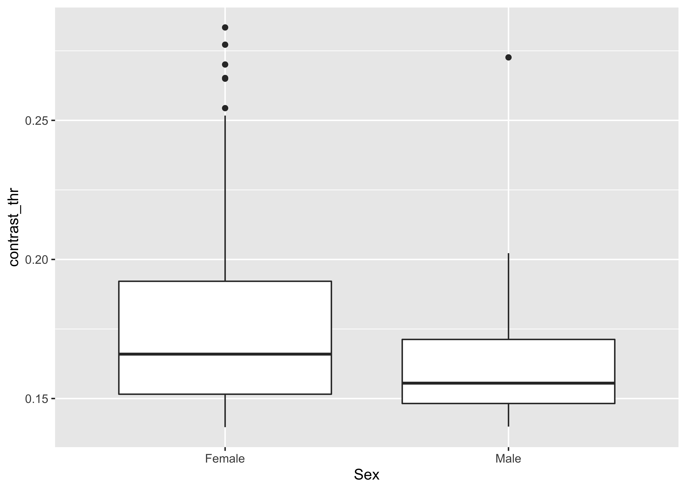
We use the esvis package to compute the Hedge’s G effect size measure since the groups have unequal means.
esvis::hedg_g(sex_diff_df, log_contrast ~ Sex)## # A tibble: 2 × 4
## Sex_ref Sex_foc coh_d hedg_g
## <chr> <chr> <dbl> <dbl>
## 1 Female Male 0.518 0.515
## 2 Male Female -0.518 -0.515In order to compute a confidence interval for the effect size, we use the esci package. We have already installed the package, so we set the following chunk to eval=FALSE.
devtools::install_github("rcalinjageman/esci")sex_diff_df$Sex.factor <- as.factor(sex_diff_df$Sex)
es_log_contrast <- esci::estimateMeanDifference.default(sex_diff_df,
Sex.factor,
log_contrast,
paired = FALSE,
var.equal = TRUE,
conf.level = .95)
#es_log_contrastd_unbiased = 0.51 95% CI [0.11, 0.94]
Motion duration thresholds
df_motion <- sex_diff_df %>%
dplyr::filter(., !is.na(log_motion)) %>%
dplyr::select(., Sex, log_motion)
xtabs(~ Sex, df_motion)## Sex
## Female Male
## 98 30sex_diff_df %>%
ggplot() +
aes(Sex, log_motion) +
geom_boxplot()## Warning: Removed 4 rows containing non-finite values (stat_boxplot).
We then test for a difference in means.
mdt_tt <-
t.test(
log_motion ~ Sex,
data = sex_diff_df,
var.equal = TRUE,
alternative = "greater"
) # Hypothesized
mdt_tt##
## Two Sample t-test
##
## data: log_motion by Sex
## t = 3.509, df = 126, p-value = 0.0003122
## alternative hypothesis: true difference in means between group Female and group Male is greater than 0
## 95 percent confidence interval:
## 0.09735106 Inf
## sample estimates:
## mean in group Female mean in group Male
## -2.270497 -2.454955Median log(motion duration) thresholds are larger in women than men This means that women were less sensitive to motion.
This can be seen in a plot in the original threshold units.
sex_diff_df %>%
ggplot() +
aes(Sex, motion_dur_thr) +
geom_boxplot()## Warning: Removed 4 rows containing non-finite values (stat_boxplot).
esvis::hedg_g(sex_diff_df, log_motion ~ Sex)## # A tibble: 2 × 4
## Sex_ref Sex_foc coh_d hedg_g
## <chr> <chr> <dbl> <dbl>
## 1 Female Male 0.732 0.728
## 2 Male Female -0.732 -0.728Using esci to calculate a CI:
es_log_motion <- esci::estimateMeanDifference.default(sex_diff_df,
Sex.factor,
log_motion,
paired = FALSE,
var.equal = TRUE,
conf.level = .95)
#es_log_motiond_unbiased = 0.73 95% CI [0.32, 1.16]
Spatial ability
Our measure of spatial ability is performance on a mental rotation task.
df_mental_rot <- sex_diff_df %>%
dplyr::filter(., !is.na(mental_rot)) %>%
dplyr::select(., Sex, mental_rot)
xtabs(~ Sex, df_mental_rot)## Sex
## Female Male
## 101 30sex_diff_df %>%
ggplot() +
aes(Sex, mental_rot) +
geom_boxplot()## Warning: Removed 1 rows containing non-finite values (stat_boxplot).
We test for a difference in means.
mr_tt <-
t.test(
mental_rot ~ Sex,
data = sex_diff_df,
var.equal = TRUE,
alternative = "less"
) # Hypothesized
mr_tt##
## Two Sample t-test
##
## data: mental_rot by Sex
## t = -2.7478, df = 129, p-value = 0.003429
## alternative hypothesis: true difference in means between group Female and group Male is less than 0
## 95 percent confidence interval:
## -Inf -1.373374
## sample estimates:
## mean in group Female mean in group Male
## 26.20792 29.66667Women had fewer correct trials than men. This is shown by the effect size.
esvis::hedg_g(sex_diff_df, mental_rot ~ Sex)## # A tibble: 2 × 4
## Sex_ref Sex_foc coh_d hedg_g
## <chr> <chr> <dbl> <dbl>
## 1 Female Male -0.571 -0.568
## 2 Male Female 0.571 0.568Using esci to calculate CIs.
es_mental_rot <- esci::estimateMeanDifference.default(sex_diff_df,
Sex.factor,
mental_rot,
paired = FALSE,
var.equal = TRUE,
conf.level = .95)
#es_mental_rotd_unbiased = -0.57 95% CI [-1.00, -0.16].
Male-typed hobbies
df_m_hobbies <- sex_diff_df %>%
dplyr::filter(., !is.na(Masculine_hobbies)) %>%
dplyr::select(., Sex, Masculine_hobbies)
xtabs(~ Sex, df_m_hobbies)## Sex
## Female Male
## 101 30sex_diff_df %>%
ggplot() +
aes(Sex, Masculine_hobbies) +
geom_boxplot()## Warning: Removed 1 rows containing non-finite values (stat_boxplot).We test for a difference in means.
mr_tt <-
t.test(
Masculine_hobbies ~ Sex,
data = sex_diff_df,
var.equal = TRUE,
alternative = "less"
) # Hypothesized
mr_tt##
## Two Sample t-test
##
## data: Masculine_hobbies by Sex
## t = -7.5758, df = 129, p-value = 3.046e-12
## alternative hypothesis: true difference in means between group Female and group Male is less than 0
## 95 percent confidence interval:
## -Inf -0.6126882
## sample estimates:
## mean in group Female mean in group Male
## 2.840264 3.624444esvis::hedg_g(sex_diff_df, Masculine_hobbies ~ Sex)## # A tibble: 2 × 4
## Sex_ref Sex_foc coh_d hedg_g
## <chr> <chr> <dbl> <dbl>
## 1 Female Male -1.58 -1.57
## 2 Male Female 1.58 1.57Using esci to calculate CIs.
es_m_hobbies <- esci::estimateMeanDifference.default(sex_diff_df,
Sex.factor,
Masculine_hobbies,
paired = FALSE,
var.equal = TRUE,
conf.level = .95)
#es_m_hobbiesd_unbiased = -1.57 95% CI [-2.05, -1.14].
Verbal ability
We predicted no sex difference in verbal ability as measured by vocabulary size.
sex_diff_df %>%
ggplot() +
aes(Sex, Masculine_hobbies) +
geom_boxplot()## Warning: Removed 1 rows containing non-finite values (stat_boxplot).
We test for a difference in means.
vocab_tt <-
t.test(
vocab ~ Sex,
data = sex_diff_df,
var.equal = TRUE,
alternative = "two.sided"
) # Hypothesized
vocab_tt##
## Two Sample t-test
##
## data: vocab by Sex
## t = -0.74845, df = 129, p-value = 0.4556
## alternative hypothesis: true difference in means between group Female and group Male is not equal to 0
## 95 percent confidence interval:
## -2.735626 1.233976
## sample estimates:
## mean in group Female mean in group Male
## 9.165842 9.916667We find no statistically significant difference in vocabulary scores.
This is also shown by the effect size.
esvis::hedg_g(sex_diff_df, vocab ~ Sex)## # A tibble: 2 × 4
## Sex_ref Sex_foc coh_d hedg_g
## <chr> <chr> <dbl> <dbl>
## 1 Female Male -0.156 -0.155
## 2 Male Female 0.156 0.155es_vocab <- esci::estimateMeanDifference.default(sex_diff_df,
Sex.factor,
vocab,
paired = FALSE,
var.equal = TRUE,
conf.level = .95)
#es_vocabd_unbiased = -1.57 95% CI [-2.05, -1.14].
Get group means and SDs
Mental rotation
df_mental_rot %>%
group_by(Sex) %>%
summarise(mean=mean(mental_rot,na.rm=T),sd=sd(mental_rot,na.rm=T))%>%
mutate_if(is.numeric, format, 2)## # A tibble: 2 × 3
## Sex mean sd
## <chr> <chr> <chr>
## 1 Female 26.20792 6.003860
## 2 Male 29.66667 6.221949Vocabulary
sex_diff_df %>%
group_by(Sex) %>%
summarise(mean=mean(vocab,na.rm=T),sd=sd(vocab,na.rm=T))%>%
mutate_if(is.numeric, format, 2)## # A tibble: 2 × 3
## Sex mean sd
## <chr> <chr> <chr>
## 1 Female 9.165842 4.636173
## 2 Male 9.916667 5.424376Interest in male-typed hobbies
sex_diff_df %>%
group_by(Sex) %>%
summarise(mean=mean(Masculine_hobbies,na.rm=T),sd=sd(Masculine_hobbies,na.rm=T))%>%
mutate_if(is.numeric, format, 2)## # A tibble: 2 × 3
## Sex mean sd
## <chr> <chr> <chr>
## 1 Female 2.840264 0.5008508
## 2 Male 3.624444 0.4872264Correlations among measures
To examine how individual differences of visual perception measures are associated with other tasks, we will use correlations within sex. The lower visual perception threshold is, the higher perceptual sensitivity this individual has. In both sexes, we expect to find negative correlations between visual perception measures and spatial ability and masculine hobbies, but no significant correlation with verbal ability. There are four planned correlations (two visual perception tasks times two cognitive tasks) within sex, for a total of eight. This project is a novel study that has not to our knowledge been conducted previously. So we have consciously decided to maintain strict control of Type II error, in order to have enough statistical power to detect a small correlation effect sizes (r=0.20) within the constraints of sample size. This decision to maximize the power (.80) leads to a trade-off between Type I and Type II error. We plan to conduct eight separate one-tailed correlation tests with Type I error at 0.05 and no Bonferroni correction. With a critical p value of .05, around 150 participants are required for each group to detect an effect size of 0.20 at an obtained power of 0.8 with a one-tailed correlation test.
We create two data frames, one for males and another for females.
sex_diff_df_F <- sex_diff_df %>%
dplyr::filter(., Sex == "Female") %>%
dplyr::select(
log_contrast,
log_motion,
mental_rot,
vocab,
Masculine_hobbies,
masscale
)sex_diff_df_M <- sex_diff_df %>%
dplyr::filter(., Sex == "Male") %>%
dplyr::select(
log_contrast,
log_motion,
mental_rot,
vocab,
Masculine_hobbies,
masscale
)Contrast thresholds and mental rotation
Women
cor.test(
sex_diff_df_F$log_contrast,
sex_diff_df_F$mental_rot,
method = "pearson",
alternative = "less"
)##
## Pearson's product-moment correlation
##
## data: sex_diff_df_F$log_contrast and sex_diff_df_F$mental_rot
## t = -2.9154, df = 97, p-value = 0.002206
## alternative hypothesis: true correlation is less than 0
## 95 percent confidence interval:
## -1.0000000 -0.1233413
## sample estimates:
## cor
## -0.2838364Contrast thresholds (negatively) correlate with mental rotation scores in women. The negative correlation means that smaller log(contrast) values or higher contrast sensitivity is associated with better performance in the mental rotation task.
We can use esci to provide CIs for this estimate.
es_mental_rot_contrast <- esci::estimateCorrelation.default(sex_diff_df_F, log_contrast, mental_rot)## Warning in predict.lm(lbf, interval = "prediction", level = conf.level): predictions on current data refer to _future_ responses#es_mental_rot_contrastWe estimate the correlation between mental_rotation and log contrast thresholds in women as follows: r = -0.28 95% CI [-0.46, -0.09].
Men
cor.test(
sex_diff_df_M$log_contrast,
sex_diff_df_M$mental_rot,
method = "pearson",
alternative = "less"
)##
## Pearson's product-moment correlation
##
## data: sex_diff_df_M$log_contrast and sex_diff_df_M$mental_rot
## t = -1.334, df = 28, p-value = 0.09647
## alternative hypothesis: true correlation is less than 0
## 95 percent confidence interval:
## -1.00000000 0.06694135
## sample estimates:
## cor
## -0.2444586Contrast thresholds do not significantly correlate with mental rotation scores in men.
We can use esci to provide CIs for this estimate.
es_mental_rot_contrast <- esci::estimateCorrelation.default(sex_diff_df_M, log_contrast, mental_rot)## Warning in predict.lm(lbf, interval = "prediction", level = conf.level): predictions on current data refer to _future_ responses#es_mental_rot_contrastWe estimate the correlation between mental_rotation and log contrast thresholds in men as follows: r = -0.24 95% CI [-0.56, 0.13].
Motion thresholds and mental rotation
Women
cor.test(
sex_diff_df_F$log_motion,
sex_diff_df_F$mental_rot,
method = "pearson",
alternative = "less"
)##
## Pearson's product-moment correlation
##
## data: sex_diff_df_F$log_motion and sex_diff_df_F$mental_rot
## t = -3.2535, df = 95, p-value = 0.0007897
## alternative hypothesis: true correlation is less than 0
## 95 percent confidence interval:
## -1.0000000 -0.1569305
## sample estimates:
## cor
## -0.3166253Log(motion duration) thresholds (negatively) correlate with mental rotation scores in women This means that lower thresholds (higher sensitivity) is associated with better performance in the mental rotation task.
We can use esci to provide CIs for this estimate.
es_mental_rot_motion <- esci::estimateCorrelation.default(sex_diff_df_F, log_motion, mental_rot)## Warning in predict.lm(lbf, interval = "prediction", level = conf.level): predictions on current data refer to _future_ responses#es_mental_rot_motionWe estimate the correlation between mental_rotateion and log motion thresholds in women as follows: r = -0.32 95% CI [-0.49, -0.13].
Men
cor.test(
sex_diff_df_M$log_motion,
sex_diff_df_M$mental_rot,
method = "pearson",
alternative = "less"
)##
## Pearson's product-moment correlation
##
## data: sex_diff_df_M$log_motion and sex_diff_df_M$mental_rot
## t = 0.64141, df = 28, p-value = 0.7368
## alternative hypothesis: true correlation is less than 0
## 95 percent confidence interval:
## -1.0000000 0.4115473
## sample estimates:
## cor
## 0.1203345Motion duration thresholds do not significantly correlate with mental rotation scores in men.
We can use esci to provide CIs for this estimate.
es_mental_rot_motion <- esci::estimateCorrelation.default(sex_diff_df_M, log_motion, mental_rot)## Warning in predict.lm(lbf, interval = "prediction", level = conf.level): predictions on current data refer to _future_ responses#es_mental_rot_motionWe estimate the correlation between mental_rotation and log motion thresholds in men as follows: r = 0.12 95% CI [-0.25, 0.46]
Contrast thresholds and male-typed activities
Women
cor.test(
sex_diff_df_F$Masculine_hobbies,
sex_diff_df_F$log_contrast,
method = "pearson",
alternative = "less"
)##
## Pearson's product-moment correlation
##
## data: sex_diff_df_F$Masculine_hobbies and sex_diff_df_F$log_contrast
## t = -1.9424, df = 97, p-value = 0.02749
## alternative hypothesis: true correlation is less than 0
## 95 percent confidence interval:
## -1.00000000 -0.02808275
## sample estimates:
## cor
## -0.1934967es_contrast_m_hobbies <- esci::estimateCorrelation.default(sex_diff_df_F, Masculine_hobbies, log_contrast)## Warning in predict.lm(lbf, interval = "prediction", level = conf.level): predictions on current data refer to _future_ responses#es_contrast_m_hobbies We estimate the correlation between log contrast and interest in male-typed activities in women as follows: r = -0.19 95% CI [-0.38, 0.00]
Men
cor.test(
sex_diff_df_M$Masculine_hobbies,
sex_diff_df_M$log_contrast,
method = "pearson",
alternative = "less"
)##
## Pearson's product-moment correlation
##
## data: sex_diff_df_M$Masculine_hobbies and sex_diff_df_M$log_contrast
## t = 1.137, df = 28, p-value = 0.8674
## alternative hypothesis: true correlation is less than 0
## 95 percent confidence interval:
## -1.0000000 0.4852276
## sample estimates:
## cor
## 0.2100723es_contrast_m_hobbies <- esci::estimateCorrelation.default(sex_diff_df_M, Masculine_hobbies, log_contrast)## Warning in predict.lm(lbf, interval = "prediction", level = conf.level): predictions on current data refer to _future_ responses#es_contrast_m_hobbiesWe estimate the correlation between mental_rotation and interest in male-typed activities in men as follows: r = 0.21 95% CI [-0.16, 0.53]
Motion thresholds and male-typed activities
Women
cor.test(
sex_diff_df_F$Masculine_hobbies,
sex_diff_df_F$log_motion,
method = "pearson",
alternative = "less"
)##
## Pearson's product-moment correlation
##
## data: sex_diff_df_F$Masculine_hobbies and sex_diff_df_F$log_motion
## t = 0.32894, df = 95, p-value = 0.6285
## alternative hypothesis: true correlation is less than 0
## 95 percent confidence interval:
## -1.0000000 0.2006363
## sample estimates:
## cor
## 0.03372894es_motion_m_hobbies <- esci::estimateCorrelation.default(sex_diff_df_F, Masculine_hobbies, log_motion)## Warning in predict.lm(lbf, interval = "prediction", level = conf.level): predictions on current data refer to _future_ responses#es_motion_m_hobbiesWe estimate the correlation between log motion and interest in male-typed activities in women as follows: r = 0.03 95% CI [-0.17, 0.23]
Men
cor.test(
sex_diff_df_M$Masculine_hobbies,
sex_diff_df_M$log_motion,
method = "pearson",
alternative = "less"
)##
## Pearson's product-moment correlation
##
## data: sex_diff_df_M$Masculine_hobbies and sex_diff_df_M$log_motion
## t = 0.39651, df = 28, p-value = 0.6526
## alternative hypothesis: true correlation is less than 0
## 95 percent confidence interval:
## -1.0000000 0.3725803
## sample estimates:
## cor
## 0.07472416es_motion_m_hobbies <- esci::estimateCorrelation.default(sex_diff_df_M, Masculine_hobbies, log_motion)## Warning in predict.lm(lbf, interval = "prediction", level = conf.level): predictions on current data refer to _future_ responses#es_mental_rot_motionWe estimate the correlation between mental_rotation and interest in male-typed activities in men as follows: r = 0.07 95% CI [-0.29, 0.42]
Contrast thresholds and motion thresholds
Women
cor.test(
sex_diff_df_F$log_contrast,
sex_diff_df_F$log_motion,
method = "pearson",
alternative = "greater"
)##
## Pearson's product-moment correlation
##
## data: sex_diff_df_F$log_contrast and sex_diff_df_F$log_motion
## t = 1.4268, df = 94, p-value = 0.07848
## alternative hypothesis: true correlation is greater than 0
## 95 percent confidence interval:
## -0.02392513 1.00000000
## sample estimates:
## cor
## 0.1455917The vision measures do not correlate in women.
We can use esci to provide CIs for this estimate.
es_contrast_motion <- esci::estimateCorrelation.default(sex_diff_df_F, log_contrast, log_motion)## Warning in predict.lm(lbf, interval = "prediction", level = conf.level): predictions on current data refer to _future_ responses#es_contrast_motionWe estimate the correlation between log contrast and log motion thresholds in women as follows: r = 0.15 95% CI [-0.06, 0.34].
Men
cor.test(
sex_diff_df_M$log_contrast,
sex_diff_df_M$log_motion,
method = "pearson",
alternative = "greater"
)##
## Pearson's product-moment correlation
##
## data: sex_diff_df_M$log_contrast and sex_diff_df_M$log_motion
## t = 2.3575, df = 28, p-value = 0.01281
## alternative hypothesis: true correlation is greater than 0
## 95 percent confidence interval:
## 0.1149104 1.0000000
## sample estimates:
## cor
## 0.4069684The vision measures correlate in men.
We can use esci to provide CIs for this estimate.
es_contrast_motion <- esci::estimateCorrelation.default(sex_diff_df_M, log_contrast, log_motion)## Warning in predict.lm(lbf, interval = "prediction", level = conf.level): predictions on current data refer to _future_ responses#es_contrast_motionWe estimate the correlation between log contrast and log motion thresholds in men as follows: r = 0.41 95% CI [0.05, 0.67].
Visualizations
Setup
if (!require("gridExtra")){
install.packages("gridExtra")
}
library(gridExtra)
library(patchwork)
our_color_palette = "Dark2"
our_colors <- RColorBrewer::brewer.pal(n = 3, name = our_color_palette)
plot_point_size <- 0.75
# Recode "female"/"male" as "women"/"men
recoded_sex_diff_df <- sex_diff_df %>%
dplyr::mutate(., Sex = dplyr::recode(Sex, Female = "Women", Male = "Men"))# "The APA has determined specifications for the size of figures and the fonts used in them. Figures of one column must be between 2 and 3.25 inches wide (5 to 8.45 cm). Two-column figures must be between 4.25 and 6.875 inches wide (10.6 to 17.5 cm). The height of figures should not exceed the top and bottom margins. The text in a figure should be in a san serif font (such as Helvetica, Arial, or Futura). The font size must be between eight and fourteen point. Use circles and squares to distinguish curves on a line graph (at the same font size as the other labels). "
theme.custom <- theme_classic() +
theme(
plot.title = element_text(size = 13, face = "bold", hjust = 0.5),
axis.title.x = element_text(size = 12),
axis.title.y = element_text(size = 12),
strip.text = element_text(size = 11),
axis.text = element_text(size = 11),
legend.position = "bottom",
legend.title = element_blank(),
legend.text = element_text(size = 12),
aspect.ratio = 1
)Histograms
sex_diff_boxplot <- function(df = recoded_sex_diff_df,
x_var = "Sex",
y_var = "log_contrast",
axis_label = "log(contrast)") {
x_var_s <- sym(x_var)
y_var_s <- sym(y_var)
p <- ggplot(df) +
aes(
x = !!x_var_s,
y = !!y_var_s,
group = Sex,
color = Sex
) +
geom_boxplot(outlier.shape = NA, color = "black") +
geom_jitter(size = plot_point_size,
height = .1,
width = .1,
alpha = 1/2) +
scale_color_brewer(palette = our_color_palette) +
theme.custom +
ylab(axis_label) +
theme(legend.position = "none") +
theme(axis.title.x = element_blank())
p
}
sex_diff_boxplot(recoded_sex_diff_df)## Warning: Removed 2 rows containing non-finite values (stat_boxplot).## Warning: Removed 2 rows containing missing values (geom_point).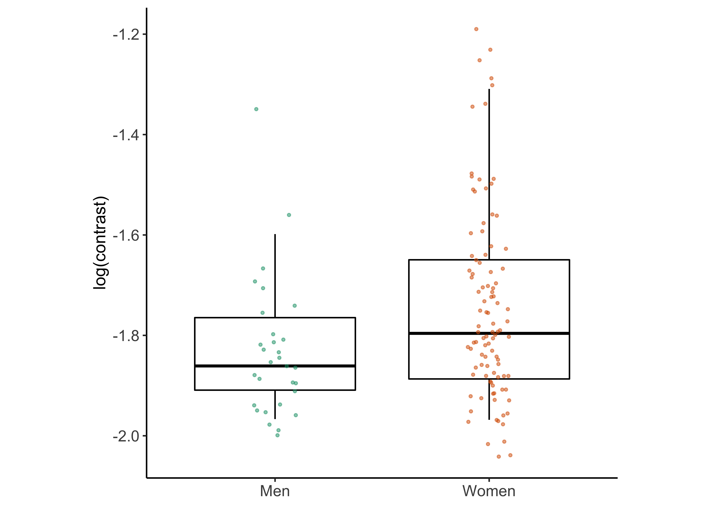
p_hist_contrast <- sex_diff_boxplot(y_var = "log_contrast", axis_label = "log(contrast)")
p_hist_contrast## Warning: Removed 2 rows containing non-finite values (stat_boxplot).## Warning: Removed 2 rows containing missing values (geom_point).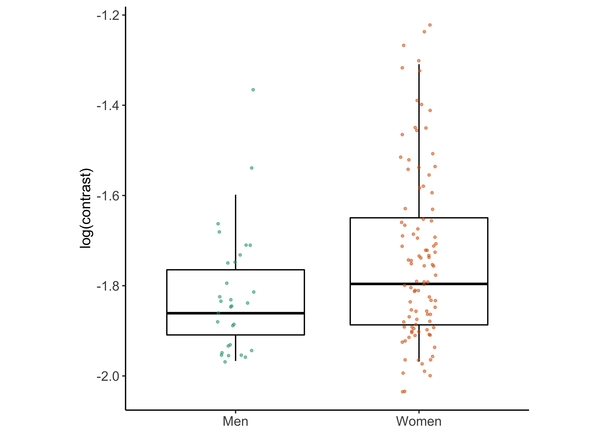
p_hist_motion <- sex_diff_boxplot(y_var = "log_motion", axis_label = "log(motion)")
p_hist_motion## Warning: Removed 4 rows containing non-finite values (stat_boxplot).## Warning: Removed 4 rows containing missing values (geom_point).
p_hist_mental_rot <- sex_diff_boxplot(y_var = "mental_rot", axis_label = "Mental rotation score")
p_hist_mental_rot## Warning: Removed 1 rows containing non-finite values (stat_boxplot).## Warning: Removed 1 rows containing missing values (geom_point).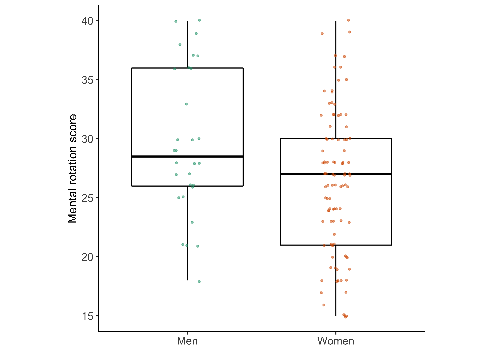
p_hist_interests <- sex_diff_boxplot(y_var = 'Masculine_hobbies', axis_label = "Male-typed activities")
p_hist_interests## Warning: Removed 1 rows containing non-finite values (stat_boxplot).## Warning: Removed 1 rows containing missing values (geom_point).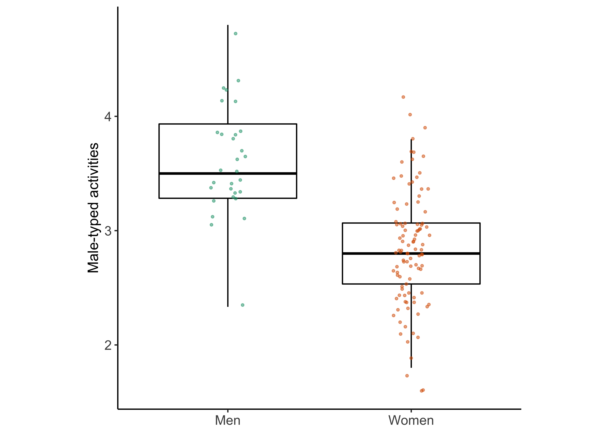
p_hist_vocab <- sex_diff_boxplot(y_var = 'vocab', axis_label = "Vocabulary")
p_hist_vocab## Warning: Removed 1 rows containing non-finite values (stat_boxplot).## Warning: Removed 1 rows containing missing values (geom_point).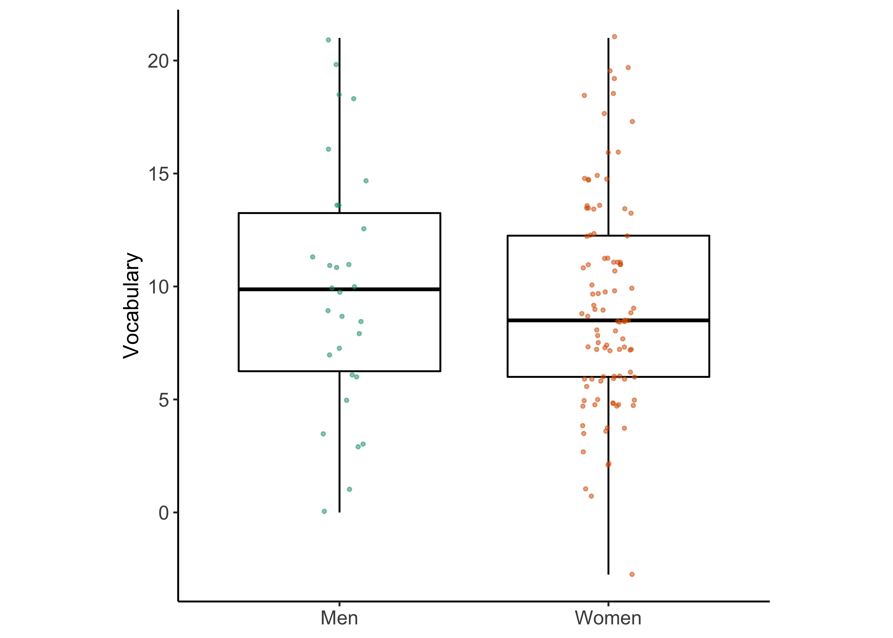
Scatterplots
sex_diff_scatter <-
function(df,
x_var,
y_var,
x_rev = FALSE,
y_rev = FALSE,
an_f = "",
an_m = "",
anx = NULL,
any = NULL,
x_lab = "X axis",
y_lab = "Y axis",
square_axis = TRUE) {
require(tidyverse)
x_var_s <- sym(x_var)
y_var_s <- sym(y_var)
p <- ggplot(df) +
aes(
x = !!x_var_s,
y = !!y_var_s,
group = Sex,
fill = Sex,
color = Sex
) +
geom_jitter(size = plot_point_size) +
stat_smooth(
method = "lm",
se = FALSE,
na.rm = TRUE
) +
xlab(x_lab) +
ylab(y_lab) +
theme.custom +
annotate(
"text",
x = anx,
y = any,
size = 5,
label = c(an_f, an_m),
color = our_colors[2:1],
hjust = 0 # left-justified
)
p <- p + scale_color_brewer(palette = our_color_palette)
if (square_axis)
{
p + coord_fixed() + theme(asp.ratio = 1)
}
# if (stringr::str_detect(x_var, 'hobbies')) {
# p <- p + xlim(1, 5)
# }
# if (stringr::str_detect(y_var, 'hobbies')) {
# p <- p + ylim(1, 5)
# }
# Reverse scale for threshold measures?
if (x_rev)
p <- p + scale_x_reverse()
if (y_rev)
p <- p + scale_y_reverse()
p
}Create matrices of correlation coefficients for subsequent plotting.
corr_vars <- c('log_contrast', 'log_motion', 'mental_rot', 'Masculine_hobbies')
df_corr_F <- sex_diff_df_F %>%
dplyr::select(., corr_vars)## Note: Using an external vector in selections is ambiguous.
## ℹ Use `all_of(corr_vars)` instead of `corr_vars` to silence this message.
## ℹ See <https://tidyselect.r-lib.org/reference/faq-external-vector.html>.
## This message is displayed once per session.corr_F <- Hmisc::rcorr(as.matrix(df_corr_F), type = c("pearson"))
df_corr_M <- sex_diff_df_M %>%
dplyr::select(., corr_vars)
corr_M <- Hmisc::rcorr(as.matrix(df_corr_M), type = c("pearson"))
df_corr_all <- recoded_sex_diff_df %>%
dplyr::select(., corr_vars)
corr_all <- Hmisc::rcorr(as.matrix(df_corr_all), type = c("pearson"))Create a helper function to generate and plot correlation coefficients.
sex_diff_corr_summ <- function(x_var, y_var, print_table = TRUE,
corr_all_df = corr_all,
corr_M_df = corr_M,
corr_F_df = corr_F,
show_combined = FALSE) {
require(tidyverse) # for %>%
corr_all_df <- tibble::tibble(
cor_coef = corr_all_df$r[x_var, y_var],
p_val = corr_all_df$P[x_var, y_var],
n = corr_all_df$n[x_var, y_var],
pop = "Both"
)
males_df <- tibble::tibble(
cor_coef = corr_M_df$r[x_var, y_var],
p_val = corr_M_df$P[x_var, y_var],
n = corr_M_df$n[x_var, y_var],
pop = "Males"
)
females_df <- tibble::tibble(
cor_coef = corr_F_df$r[x_var, y_var],
p_val = corr_F_df$P[x_var, y_var],
n = corr_F_df$n[x_var, y_var],
pop = "Females"
)
if (show_combined) {
df <- rbind(corr_all_df, males_df, females_df)
} else {
df <- rbind(males_df, females_df)
}
# Add stars for significance levels
df <- df %>%
mutate(., stars = if_else(p_val < .001, "****",
if_else(p_val < .005, "***",
if_else(
p_val < .01, "**",
if_else(p_val < .05, "*", "")
))))
if (print_table) {
kableExtra::kable(df, format = 'html') %>%
kableExtra::kable_styling()
} else {
df
}
}Mental rotation and contrast
corr_df <- sex_diff_corr_summ(
"log_contrast",
"mental_rot",
corr_all,
corr_M_df = corr_M,
corr_F_df = corr_F,
print_table = FALSE
)
p_mental_rot_contrast <- sex_diff_scatter(
recoded_sex_diff_df,
"log_contrast",
"mental_rot",
x_rev = FALSE,
y_rev = FALSE,
paste0(
"r = ",
format(corr_df$cor_coef[2], digits = 2, nsmall = 2),
corr_df$stars[2]
),
paste0(
"r = ",
format(corr_df$cor_coef[1], digits = 2, nsmall = 2),
corr_df$stars[1]
),
c(-1.55),
c(35, 38),
"log(contrast threshold)",
"Mental rotation score"
)
p_mental_rot_contrast## `geom_smooth()` using formula 'y ~ x'## Warning: Removed 3 rows containing missing values (geom_point).
Mental rotation and motion
corr_df <- sex_diff_corr_summ("log_motion",
"mental_rot", print_table = FALSE)
p_motion <- sex_diff_scatter(
recoded_sex_diff_df,
"log_motion",
"mental_rot",
x_rev = FALSE,
y_rev = FALSE,
paste0(
"r = ",
format(corr_df$cor_coef[2], digits = 2, nsmall = 2),
corr_df$stars[2]
),
paste0(
"r = ",
format(corr_df$cor_coef[1], digits = 2, nsmall = 2),
corr_df$stars[1]
),
c(-1.55),
c(35, 38),
"log(motion threshold)",
"Mental rotation score"
)
p_mental_rot_motion <- p_motion +
ggplot2::annotate(
geom = "point",
x = recoded_sex_diff_df$log_motion[c(115, 118)],
y = recoded_sex_diff_df$mental_rot[c(115, 118)],
color = "black",
size = 6,
shape = 0
)
p_mental_rot_motion## `geom_smooth()` using formula 'y ~ x'## Warning: Removed 5 rows containing missing values (geom_point). #### Male-typed interests and contrast
#### Male-typed interests and contrast
corr_df <- sex_diff_corr_summ(
"log_contrast",
"Masculine_hobbies",
corr_all,
corr_M_df = corr_M,
corr_F_df = corr_F,
print_table = FALSE
)
p_interests_contrast <- sex_diff_scatter(
recoded_sex_diff_df,
"log_contrast",
"Masculine_hobbies",
x_rev = FALSE,
y_rev = FALSE,
paste0("r = ",
format(
corr_df$cor_coef[2], digits = 2, nsmall = 2
),
"*"),
paste0(
"r = ",
format(corr_df$cor_coef[1], digits = 2, nsmall = 2),
corr_df$stars[1]
),
c(-1.5),
c(4.35, 4.8),
"log(contrast threshold)",
"Interest in male-typed activities"
)
p_interests_contrast## `geom_smooth()` using formula 'y ~ x'## Warning: Removed 3 rows containing missing values (geom_point).
Contrast and motion
corr_df <- sex_diff_corr_summ("log_motion",
"log_contrast", print_table = FALSE)
p_vision <- sex_diff_scatter(
recoded_sex_diff_df,
"log_motion",
"log_contrast",
x_rev = FALSE,
y_rev = FALSE,
paste0(
"r = ",
format(corr_df$cor_coef[2], digits = 2, nsmall = 2),
corr_df$stars[2]
),
paste0(
"r = ",
format(corr_df$cor_coef[1], digits = 2, nsmall = 2),
corr_df$stars[1]
),
c(-1.4),
c(-1.38, -1.3),
"log(motion threshold)",
"log(contrast threshold)"
)
p_vision_aug <- p_vision +
ggplot2::annotate(
geom = "point",
x = recoded_sex_diff_df$log_motion[c(115, 118)],
y = recoded_sex_diff_df$log_contrast[c(115, 118)],
color = "black",
size = 8,
shape = 0
)
p_vision_aug## `geom_smooth()` using formula 'y ~ x'## Warning: Removed 6 rows containing missing values (geom_point).
Export
p_boxplots <- p_hist_contrast + p_hist_motion + p_hist_mental_rot + p_hist_interests
p_boxplots_annotated <- p_boxplots + plot_annotation(tag_levels = "A")
p_boxplots_annotated## Warning: Removed 2 rows containing non-finite values (stat_boxplot).## Warning: Removed 2 rows containing missing values (geom_point).## Warning: Removed 4 rows containing non-finite values (stat_boxplot).## Warning: Removed 4 rows containing missing values (geom_point).## Warning: Removed 1 rows containing non-finite values (stat_boxplot).## Warning: Removed 1 rows containing missing values (geom_point).## Warning: Removed 1 rows containing non-finite values (stat_boxplot).## Warning: Removed 1 rows containing missing values (geom_point).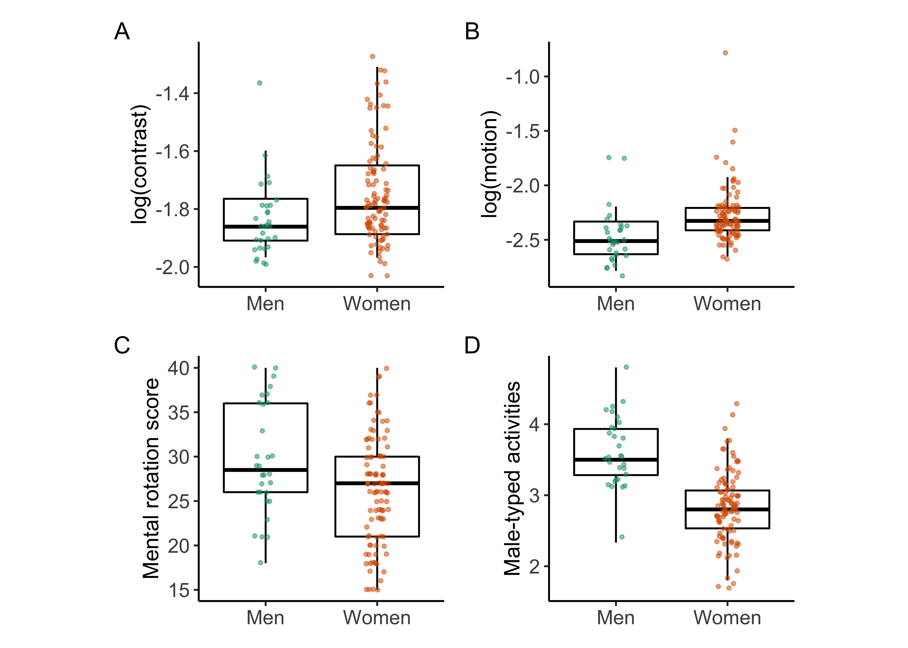
ggsave(
plot = p_boxplots_annotated,
filename = "paper_figs/fig-01-boxplots.jpg",
units = "in",
width = 6.875,
dpi = 600
)## Saving 6.88 x 5 in image## Warning: Removed 2 rows containing non-finite values (stat_boxplot).## Warning: Removed 2 rows containing missing values (geom_point).## Warning: Removed 4 rows containing non-finite values (stat_boxplot).## Warning: Removed 4 rows containing missing values (geom_point).## Warning: Removed 1 rows containing non-finite values (stat_boxplot).## Warning: Removed 1 rows containing missing values (geom_point).## Warning: Removed 1 rows containing non-finite values (stat_boxplot).## Warning: Removed 1 rows containing missing values (geom_point).# Mental rotation and vision measures
p_mental_rot_scatters <- p_mental_rot_contrast | p_mental_rot_motion
p_mental_rot_scatters_annotated <- p_mental_rot_scatters + plot_annotation(tag_levels = "A")
p_mental_rot_scatters_annotated## `geom_smooth()` using formula 'y ~ x'## Warning: Removed 3 rows containing missing values (geom_point).## `geom_smooth()` using formula 'y ~ x'## Warning: Removed 5 rows containing missing values (geom_point).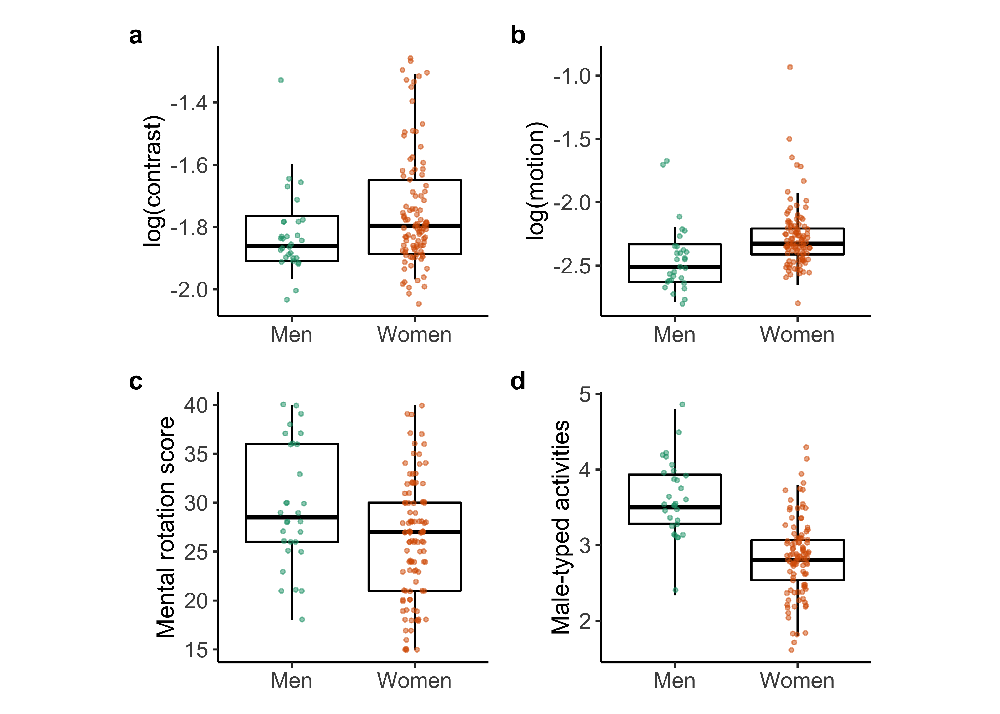
ggsave(
plot = p_mental_rot_scatters_annotated,
filename = "paper_figs/fig-02-mental-rot-vision.jpg",
units = "in",
width = 6.875,
dpi = 600
)## Saving 6.88 x 5 in image
## `geom_smooth()` using formula 'y ~ x'## Warning: Removed 3 rows containing missing values (geom_point).## `geom_smooth()` using formula 'y ~ x'## Warning: Removed 5 rows containing missing values (geom_point).ggsave(
plot = p_hist_vocab,
filename = "paper_figs/fig-S1-vocab.jpg",
units = "in",
width = 3.4375,
dpi = 600
)## Saving 3.44 x 5 in image## Warning: Removed 1 rows containing non-finite values (stat_boxplot).## Warning: Removed 1 rows containing missing values (geom_point).# # Mental rotation and vision measures
# p = grid.arrange(ncol = 2, nrow = 1, p_mental_rot_contrast, p_mental_rot_motion)
# ggsave(
# plot = p,
# filename = "paper_figs/fig-02-mental-rot-vision-alt.jpg",
# units = "in",
# width = 6.875,
# dpi = 600
# )
# Contrast thresholds and motion thresholds
ggsave(
plot = p_vision_aug,
filename = "paper_figs/fig-03-contrast-motion.jpg",
units = "in",
width = 3.4375,
dpi = 600
)## Saving 3.44 x 5 in image## `geom_smooth()` using formula 'y ~ x'## Warning: Removed 6 rows containing missing values (geom_point).ggsave(
plot = p_interests_contrast,
filename = "paper_figs/fig-S2-contrast-interests.jpg",
units = "in",
width = 3.4375,
dpi = 600
)## Saving 3.44 x 5 in image
## `geom_smooth()` using formula 'y ~ x'## Warning: Removed 3 rows containing missing values (geom_point).Non-pregistered analyses
Does vision account for mental rotation?
One can model mental rotation ~ contrast + motion + sex and determine whether adding the sex term or its interactions provides a better fit than the vision measures.
Model-based approach
df_mr_contr_motion <- sex_diff_df %>%
dplyr::select(., mental_rot, log_contrast, log_motion, Sex, Masculine_hobbies) %>%
dplyr::filter(., !is.na(Sex),
!is.na(log_contrast),
!is.na(log_motion),
!is.na(mental_rot))
# Export for relative weight analysis (RWA)
readr::write_csv(df_mr_contr_motion, file = file.path(params$data_path, 'mr-contr-motion-sex.csv'))Model 0: mental_rot ~ log_contrast*log_motion*Sex
Let’s fit a full model with all interactions:
lm_mr_contr_motion_sex_full <- lm(mental_rot ~ log_contrast*log_motion*Sex, data = df_mr_contr_motion)
summary(lm_mr_contr_motion_sex_full)##
## Call:
## lm(formula = mental_rot ~ log_contrast * log_motion * Sex, data = df_mr_contr_motion)
##
## Residuals:
## Min 1Q Median 3Q Max
## -14.3999 -3.7147 -0.1083 3.3877 12.0877
##
## Coefficients:
## Estimate Std. Error t value Pr(>|t|)
## (Intercept) -24.30 59.33 -0.409 0.683
## log_contrast -20.43 34.16 -0.598 0.551
## log_motion -17.08 26.40 -0.647 0.519
## SexMale -56.73 98.86 -0.574 0.567
## log_contrast:log_motion -5.99 15.16 -0.395 0.693
## log_contrast:SexMale -52.77 57.80 -0.913 0.363
## log_motion:SexMale -22.18 45.59 -0.486 0.628
## log_contrast:log_motion:SexMale -20.56 26.30 -0.782 0.436
##
## Residual standard error: 5.682 on 117 degrees of freedom
## Multiple R-squared: 0.1913, Adjusted R-squared: 0.143
## F-statistic: 3.955 on 7 and 117 DF, p-value: 0.0006531car::Anova(lm_mr_contr_motion_sex_full)## Anova Table (Type II tests)
##
## Response: mental_rot
## Sum Sq Df F value Pr(>F)
## log_contrast 214.7 1 6.6513 0.011148 *
## log_motion 113.5 1 3.5173 0.063223 .
## Sex 96.7 1 2.9941 0.086205 .
## log_contrast:log_motion 34.6 1 1.0709 0.302880
## log_contrast:Sex 23.9 1 0.7403 0.391322
## log_motion:Sex 222.9 1 6.9053 0.009746 **
## log_contrast:log_motion:Sex 19.7 1 0.6110 0.435983
## Residuals 3777.1 117
## ---
## Signif. codes: 0 '***' 0.001 '**' 0.01 '*' 0.05 '.' 0.1 ' ' 1confint(lm_mr_contr_motion_sex_full)## 2.5 % 97.5 %
## (Intercept) -141.79397 93.20481
## log_contrast -88.08265 47.22010
## log_motion -69.36066 35.20288
## SexMale -252.52312 139.05713
## log_contrast:log_motion -36.00901 24.02970
## log_contrast:SexMale -167.24730 61.70843
## log_motion:SexMale -112.47290 68.11721
## log_contrast:log_motion:SexMale -72.64318 31.52737lsr::etaSquared(lm_mr_contr_motion_sex_full)## eta.sq eta.sq.part
## log_contrast 0.045970898 0.053790602
## log_motion 0.024310297 0.029185210
## Sex 0.020693990 0.024952058
## log_contrast:log_motion 0.007401522 0.009069853
## log_contrast:Sex 0.005116695 0.006287621
## log_motion:Sex 0.047726746 0.055730622
## log_contrast:log_motion:Sex 0.004223110 0.005195250Model 1: mental_rot ~ log_contrast + log_motion + Sex + log_motion:Sex
Keep only components that meet a \(p<.1\) criterion.
lm_mr_contr_motion_motion_sex_int <- lm(mental_rot ~ log_contrast + log_motion + Sex + log_motion:Sex, data = df_mr_contr_motion)
summary(lm_mr_contr_motion_motion_sex_int)##
## Call:
## lm(formula = mental_rot ~ log_contrast + log_motion + Sex + log_motion:Sex,
## data = df_mr_contr_motion)
##
## Residuals:
## Min 1Q Median 3Q Max
## -13.1938 -3.9686 -0.2294 3.6811 12.0590
##
## Coefficients:
## Estimate Std. Error t value Pr(>|t|)
## (Intercept) -3.010 7.206 -0.418 0.6769
## log_contrast -8.295 3.212 -2.582 0.0110 *
## log_motion -6.564 2.332 -2.815 0.0057 **
## SexMale 28.818 11.364 2.536 0.0125 *
## log_motion:SexMale 11.169 4.693 2.380 0.0189 *
## ---
## Signif. codes: 0 '***' 0.001 '**' 0.01 '*' 0.05 '.' 0.1 ' ' 1
##
## Residual standard error: 5.675 on 120 degrees of freedom
## Multiple R-squared: 0.1725, Adjusted R-squared: 0.1449
## F-statistic: 6.255 on 4 and 120 DF, p-value: 0.000132car::Anova(lm_mr_contr_motion_motion_sex_int)## Anova Table (Type II tests)
##
## Response: mental_rot
## Sum Sq Df F value Pr(>F)
## log_contrast 214.7 1 6.6666 0.01103 *
## log_motion 117.5 1 3.6470 0.05856 .
## Sex 76.0 1 2.3599 0.12712
## log_motion:Sex 182.5 1 5.6650 0.01888 *
## Residuals 3865.0 120
## ---
## Signif. codes: 0 '***' 0.001 '**' 0.01 '*' 0.05 '.' 0.1 ' ' 1confint(lm_mr_contr_motion_motion_sex_int)## 2.5 % 97.5 %
## (Intercept) -17.277886 11.257847
## log_contrast -14.655001 -1.934077
## log_motion -11.180411 -1.947654
## SexMale 6.316888 51.318118
## log_motion:SexMale 1.878016 20.460301lsr::etaSquared(lm_mr_contr_motion_motion_sex_int)## eta.sq eta.sq.part
## log_contrast 0.04597090 0.05263138
## log_motion 0.02514835 0.02949511
## Sex 0.01627327 0.01928678
## log_motion:Sex 0.03906416 0.04508043Compare the fit of the reduced model to the fuller model.
anova(lm_mr_contr_motion_sex_full, lm_mr_contr_motion_motion_sex_int)## Analysis of Variance Table
##
## Model 1: mental_rot ~ log_contrast * log_motion * Sex
## Model 2: mental_rot ~ log_contrast + log_motion + Sex + log_motion:Sex
## Res.Df RSS Df Sum of Sq F Pr(>F)
## 1 117 3777.1
## 2 120 3865.0 -3 -87.92 0.9078 0.4396We choose the simpler model for parsimony reasons and a reduction in RSS even though the fit does not improve to a substantial degree.
Model 2: mental_rot ~ log_contrast + log_motion
Let’s drop Sexbecause its effect is small, and the log_motion:Sex interaction to see whether these improve the fit.
lm_mr_contr_motion_no_sex <- lm(mental_rot ~ log_contrast + log_motion, data = df_mr_contr_motion)
summary(lm_mr_contr_motion_no_sex)##
## Call:
## lm(formula = mental_rot ~ log_contrast + log_motion, data = df_mr_contr_motion)
##
## Residuals:
## Min 1Q Median 3Q Max
## -13.2734 -4.0444 -0.2688 3.3211 14.5612
##
## Coefficients:
## Estimate Std. Error t value Pr(>|t|)
## (Intercept) 1.268 6.477 0.196 0.8451
## log_contrast -8.470 3.243 -2.612 0.0101 *
## log_motion -4.727 2.026 -2.333 0.0213 *
## ---
## Signif. codes: 0 '***' 0.001 '**' 0.01 '*' 0.05 '.' 0.1 ' ' 1
##
## Residual standard error: 5.814 on 122 degrees of freedom
## Multiple R-squared: 0.1172, Adjusted R-squared: 0.1027
## F-statistic: 8.097 on 2 and 122 DF, p-value: 0.000499car::Anova(lm_mr_contr_motion_no_sex)## Anova Table (Type II tests)
##
## Response: mental_rot
## Sum Sq Df F value Pr(>F)
## log_contrast 230.6 1 6.8234 0.01013 *
## log_motion 184.0 1 5.4433 0.02128 *
## Residuals 4123.5 122
## ---
## Signif. codes: 0 '***' 0.001 '**' 0.01 '*' 0.05 '.' 0.1 ' ' 1confint(lm_mr_contr_motion_no_sex)## 2.5 % 97.5 %
## (Intercept) -11.554100 14.0899548
## log_contrast -14.889265 -2.0511391
## log_motion -8.737419 -0.7161637lsr::etaSquared(lm_mr_contr_motion_no_sex)## eta.sq eta.sq.part
## log_contrast 0.04937532 0.05296689
## log_motion 0.03938889 0.04271161Compare this model to the fuller one.
anova(lm_mr_contr_motion_motion_sex_int, lm_mr_contr_motion_no_sex)## Analysis of Variance Table
##
## Model 1: mental_rot ~ log_contrast + log_motion + Sex + log_motion:Sex
## Model 2: mental_rot ~ log_contrast + log_motion
## Res.Df RSS Df Sum of Sq F Pr(>F)
## 1 120 3865.0
## 2 122 4123.5 -2 -258.47 4.0125 0.02057 *
## ---
## Signif. codes: 0 '***' 0.001 '**' 0.01 '*' 0.05 '.' 0.1 ' ' 1So, the fit of the fuller model with Sex and the log_motion:Sex interaction included is better.
Model 3: mental_rot ~ log_contrast + Sex
Let’s try dropping log_motion and the Sex:log_motion interaction.
lm_mr_contr_no_motion_sex <- lm(mental_rot ~ log_contrast + Sex, data = df_mr_contr_motion)
summary(lm_mr_contr_no_motion_sex)##
## Call:
## lm(formula = mental_rot ~ log_contrast + Sex, data = df_mr_contr_motion)
##
## Residuals:
## Min 1Q Median 3Q Max
## -12.5807 -3.9650 -0.3953 4.1979 13.3733
##
## Coefficients:
## Estimate Std. Error t value Pr(>|t|)
## (Intercept) 10.847 5.679 1.910 0.0585 .
## log_contrast -8.894 3.236 -2.748 0.0069 **
## SexMale 2.560 1.253 2.043 0.0432 *
## ---
## Signif. codes: 0 '***' 0.001 '**' 0.01 '*' 0.05 '.' 0.1 ' ' 1
##
## Residual standard error: 5.843 on 122 degrees of freedom
## Multiple R-squared: 0.1083, Adjusted R-squared: 0.09369
## F-statistic: 7.409 on 2 and 122 DF, p-value: 0.0009186car::Anova(lm_mr_contr_no_motion_sex)## Anova Table (Type II tests)
##
## Response: mental_rot
## Sum Sq Df F value Pr(>F)
## log_contrast 257.9 1 7.5532 0.00690 **
## Sex 142.5 1 4.1749 0.04318 *
## Residuals 4164.9 122
## ---
## Signif. codes: 0 '***' 0.001 '**' 0.01 '*' 0.05 '.' 0.1 ' ' 1confint(lm_mr_contr_no_motion_sex)## 2.5 % 97.5 %
## (Intercept) -0.39651793 22.089699
## log_contrast -15.30009069 -2.487655
## SexMale 0.07973661 5.039821lsr::etaSquared(lm_mr_contr_no_motion_sex)## eta.sq eta.sq.part
## log_contrast 0.05520626 0.05830221
## Sex 0.03051382 0.03308787Compare this reduced model to the fuller one.
anova(lm_mr_contr_motion_motion_sex_int, lm_mr_contr_no_motion_sex)## Analysis of Variance Table
##
## Model 1: mental_rot ~ log_contrast + log_motion + Sex + log_motion:Sex
## Model 2: mental_rot ~ log_contrast + Sex
## Res.Df RSS Df Sum of Sq F Pr(>F)
## 1 120 3865.0
## 2 122 4164.9 -2 -299.92 4.656 0.01129 *
## ---
## Signif. codes: 0 '***' 0.001 '**' 0.01 '*' 0.05 '.' 0.1 ' ' 1The full model still is a better fit.
Model 4: mental_rot ~ Sex
Finally, let’s drop the vision variables.
lm_mr_no_vision_sex <- lm(mental_rot ~ Sex, data = df_mr_contr_motion)
summary(lm_mr_no_vision_sex)##
## Call:
## lm(formula = mental_rot ~ Sex, data = df_mr_contr_motion)
##
## Residuals:
## Min 1Q Median 3Q Max
## -11.6667 -3.6667 -0.3684 3.6316 13.6316
##
## Coefficients:
## Estimate Std. Error t value Pr(>|t|)
## (Intercept) 26.3684 0.6152 42.860 < 2e-16 ***
## SexMale 3.2982 1.2558 2.626 0.00973 **
## ---
## Signif. codes: 0 '***' 0.001 '**' 0.01 '*' 0.05 '.' 0.1 ' ' 1
##
## Residual standard error: 5.996 on 123 degrees of freedom
## Multiple R-squared: 0.0531, Adjusted R-squared: 0.0454
## F-statistic: 6.898 on 1 and 123 DF, p-value: 0.009727car::Anova(lm_mr_no_vision_sex)## Anova Table (Type II tests)
##
## Response: mental_rot
## Sum Sq Df F value Pr(>F)
## Sex 248.0 1 6.8978 0.009727 **
## Residuals 4422.8 123
## ---
## Signif. codes: 0 '***' 0.001 '**' 0.01 '*' 0.05 '.' 0.1 ' ' 1confint(lm_mr_no_vision_sex)## 2.5 % 97.5 %
## (Intercept) 25.1506239 27.586218
## SexMale 0.8124275 5.784064lsr::etaSquared(lm_mr_no_vision_sex)## eta.sq eta.sq.part
## Sex 0.05310184 0.05310184anova(lm_mr_contr_motion_motion_sex_int, lm_mr_no_vision_sex)## Analysis of Variance Table
##
## Model 1: mental_rot ~ log_contrast + log_motion + Sex + log_motion:Sex
## Model 2: mental_rot ~ Sex
## Res.Df RSS Df Sum of Sq F Pr(>F)
## 1 120 3865.0
## 2 123 4422.8 -3 -557.78 5.7727 0.001011 **
## ---
## Signif. codes: 0 '***' 0.001 '**' 0.01 '*' 0.05 '.' 0.1 ' ' 1Again, the full model containing the vision measures and sex is the best-fitting.
Do outliers account for results?
The scatterplots indicate that despite the log transformation, there are some individual participants who had especially high thresholds for contrast and motion duration.
Do our results hold when we trim the data to focus on those individuals whose data are within 3 standard deviations of the mean log threshold?
We define a helper function to detect outliers.
FindOutliers <- function(data, sd_thresh = as.numeric(params$outlier_sd_thresh)) {
sd = sd(data, na.rm = T)
mean = mean(data, na.rm = T)
# we identify extreme outliers
extreme.threshold.upper = (sd * sd_thresh) + mean
extreme.threshold.lower = -(sd * sd_thresh) + mean
result <-
which(data > extreme.threshold.upper |
data < extreme.threshold.lower)
print(result)
}
#all_outliers <- lapply(sex_diff_df, FindOutliers)Visual perception thresholds
Contrast thresholds
We detect outliers in contrast threshold.
FindOutliers(sex_diff_df$log_contrast)## integer(0)No contrast thresholds exceed the criterion.
Motion duration thresholds
FindOutliers(sex_diff_df$log_motion)## [1] 115 118Two cases exceed the criterion for motion.
Create a new trimmed data frame.
df_trimmed <- sex_diff_df[-c(FindOutliers(sex_diff_df$log_motion)),]## [1] 115 118xtabs(~ Sex, df_trimmed)## Sex
## Female Male
## 100 30df_trimmed %>%
ggplot() +
aes(Sex, log_motion) +
geom_boxplot()## Warning: Removed 4 rows containing non-finite values (stat_boxplot).
We then test for a difference in means.
mdt_tt <-
t.test(
log_motion ~ Sex,
data = df_trimmed,
var.equal = TRUE,
alternative = "greater"
) # Hypothesized
mdt_tt##
## Two Sample t-test
##
## data: log_motion by Sex
## t = 3.7359, df = 124, p-value = 0.000142
## alternative hypothesis: true difference in means between group Female and group Male is greater than 0
## 95 percent confidence interval:
## 0.089656 Inf
## sample estimates:
## mean in group Female mean in group Male
## -2.293820 -2.454955Women still have larger motion duration threshold than men.
Mental rotation
FindOutliers(sex_diff_df$mental_rot)## integer(0)There were no outliers in mental rotation.
Vocabulary
FindOutliers(sex_diff_df$vocab)## integer(0)There were no outliers in vocabulary.
Correlations among measures
Since trimming outliers only affected the motion threshold data, we focus on that measure.
sex_diff_df_F <- df_trimmed %>%
dplyr::filter(., Sex == "Female")
sex_diff_df_M <- df_trimmed %>%
dplyr::filter(., Sex == "Male")Motion thresholds and mental rotation
cor.test(
sex_diff_df_F$log_motion,
sex_diff_df_F$mental_rot,
method = "pearson",
alternative = "less"
)##
## Pearson's product-moment correlation
##
## data: sex_diff_df_F$log_motion and sex_diff_df_F$mental_rot
## t = -3.0141, df = 93, p-value = 0.001661
## alternative hypothesis: true correlation is less than 0
## 95 percent confidence interval:
## -1.0000000 -0.1353437
## sample estimates:
## cor
## -0.2983134Log(motion duration) thresholds (negatively) correlate with mental rotation scores in women, even after trimming.
cor.test(
sex_diff_df_M$log_motion,
sex_diff_df_M$mental_rot,
method = "pearson",
alternative = "less"
)##
## Pearson's product-moment correlation
##
## data: sex_diff_df_M$log_motion and sex_diff_df_M$mental_rot
## t = 0.64141, df = 28, p-value = 0.7368
## alternative hypothesis: true correlation is less than 0
## 95 percent confidence interval:
## -1.0000000 0.4115473
## sample estimates:
## cor
## 0.1203345Motion duration thresholds do not correlate with mental rotation scores in men.
Contrast thresholds and motion thresholds
Women
cor.test(
sex_diff_df_F$log_contrast,
sex_diff_df_F$log_motion,
method = "pearson",
alternative = "greater"
)##
## Pearson's product-moment correlation
##
## data: sex_diff_df_F$log_contrast and sex_diff_df_F$log_motion
## t = 2.0919, df = 92, p-value = 0.0196
## alternative hypothesis: true correlation is greater than 0
## 95 percent confidence interval:
## 0.0439443 1.0000000
## sample estimates:
## cor
## 0.2130843The vision measures now correlate in women.
es_contrast_motion <- esci::estimateCorrelation.default(sex_diff_df_F, log_contrast, log_motion)## Warning in predict.lm(lbf, interval = "prediction", level = conf.level): predictions on current data refer to _future_ responses#es_contrast_motionWe find that a correlation between log contrast and log motion thresholds in women is as follows: r = 0.21 95% CI [0.01, 0.40].
Men
cor.test(
sex_diff_df_M$log_contrast,
sex_diff_df_M$log_motion,
method = "pearson",
alternative = "greater"
)##
## Pearson's product-moment correlation
##
## data: sex_diff_df_M$log_contrast and sex_diff_df_M$log_motion
## t = 2.3575, df = 28, p-value = 0.01281
## alternative hypothesis: true correlation is greater than 0
## 95 percent confidence interval:
## 0.1149104 1.0000000
## sample estimates:
## cor
## 0.4069684The vision measures still correlate in men.
Modeling mental rotation
Do the trimmed data show a stronger relationship between vision and mental rotation than sex and mental rotation?
df_mr_contr_motion <- df_trimmed %>%
dplyr::select(., Sex, log_contrast, log_motion, mental_rot) %>%
dplyr::filter(., !is.na(Sex),
!is.na(log_contrast),
!is.na(log_motion),
!is.na(mental_rot))
# Export for relative weight analysis (RWA)
readr::write_csv(df_mr_contr_motion, file = file.path(params$data_path, 'mr-contr-motion-sex-trimmed.csv'))Model 2: mental_rot ~ log_contrast + log_motion + Sex + log_motion:Sex
lm_mr_contr_motion_motion_sex_int <- lm(mental_rot ~ log_contrast + log_motion + Sex + log_motion:Sex, data = df_mr_contr_motion)
summary(lm_mr_contr_motion_motion_sex_int)##
## Call:
## lm(formula = mental_rot ~ log_contrast + log_motion + Sex + log_motion:Sex,
## data = df_mr_contr_motion)
##
## Residuals:
## Min 1Q Median 3Q Max
## -13.3404 -3.9433 -0.2638 3.7303 11.8853
##
## Coefficients:
## Estimate Std. Error t value Pr(>|t|)
## (Intercept) -5.134 8.400 -0.611 0.5423
## log_contrast -8.032 3.265 -2.460 0.0153 *
## log_motion -7.682 3.200 -2.400 0.0179 *
## SexMale 31.289 12.420 2.519 0.0131 *
## log_motion:SexMale 12.232 5.158 2.371 0.0193 *
## ---
## Signif. codes: 0 '***' 0.001 '**' 0.01 '*' 0.05 '.' 0.1 ' ' 1
##
## Residual standard error: 5.708 on 118 degrees of freedom
## Multiple R-squared: 0.1577, Adjusted R-squared: 0.1292
## F-statistic: 5.524 on 4 and 118 DF, p-value: 0.0004121car::Anova(lm_mr_contr_motion_motion_sex_int)## Anova Table (Type II tests)
##
## Response: mental_rot
## Sum Sq Df F value Pr(>F)
## log_contrast 197.2 1 6.0533 0.01533 *
## log_motion 49.4 1 1.5152 0.22079
## Sex 79.5 1 2.4389 0.12104
## log_motion:Sex 183.2 1 5.6235 0.01934 *
## Residuals 3844.7 118
## ---
## Signif. codes: 0 '***' 0.001 '**' 0.01 '*' 0.05 '.' 0.1 ' ' 1confint(lm_mr_contr_motion_motion_sex_int)## 2.5 % 97.5 %
## (Intercept) -21.769526 11.500970
## log_contrast -14.496555 -1.567208
## log_motion -14.018462 -1.344717
## SexMale 6.693140 55.884219
## log_motion:SexMale 2.017535 22.447308lsr::etaSquared(lm_mr_contr_motion_motion_sex_int)## eta.sq eta.sq.part
## log_contrast 0.04320822 0.04879585
## log_motion 0.01081567 0.01267812
## Sex 0.01740879 0.02025007
## log_motion:Sex 0.04014050 0.04548901Model 4: mental_rot ~ log_contrast + Sex
Let’s try dropping log_motion and the Sex:log_motion interaction.
lm_mr_contr_no_motion_sex <- lm(mental_rot ~ log_contrast + Sex, data = df_mr_contr_motion)
summary(lm_mr_contr_no_motion_sex)##
## Call:
## lm(formula = mental_rot ~ log_contrast + Sex, data = df_mr_contr_motion)
##
## Residuals:
## Min 1Q Median 3Q Max
## -12.5858 -3.8401 -0.3692 4.1283 13.2321
##
## Coefficients:
## Estimate Std. Error t value Pr(>|t|)
## (Intercept) 10.900 5.667 1.923 0.0568 .
## log_contrast -8.943 3.229 -2.770 0.0065 **
## SexMale 2.416 1.253 1.928 0.0562 .
## ---
## Signif. codes: 0 '***' 0.001 '**' 0.01 '*' 0.05 '.' 0.1 ' ' 1
##
## Residual standard error: 5.829 on 120 degrees of freedom
## Multiple R-squared: 0.1068, Adjusted R-squared: 0.09188
## F-statistic: 7.171 on 2 and 120 DF, p-value: 0.001143car::Anova(lm_mr_contr_no_motion_sex)## Anova Table (Type II tests)
##
## Response: mental_rot
## Sum Sq Df F value Pr(>F)
## log_contrast 260.6 1 7.6710 0.006504 **
## Sex 126.3 1 3.7167 0.056234 .
## Residuals 4077.3 120
## ---
## Signif. codes: 0 '***' 0.001 '**' 0.01 '*' 0.05 '.' 0.1 ' ' 1confint(lm_mr_contr_no_motion_sex)## 2.5 % 97.5 %
## (Intercept) -0.3200292 22.119674
## log_contrast -15.3368186 -2.550105
## SexMale -0.0652405 4.897012lsr::etaSquared(lm_mr_contr_no_motion_sex)## eta.sq eta.sq.part
## log_contrast 0.05710038 0.06008429
## Sex 0.02766563 0.03004185Compare this reduced model to the fuller one.
anova(lm_mr_contr_motion_motion_sex_int, lm_mr_contr_no_motion_sex)## Analysis of Variance Table
##
## Model 1: mental_rot ~ log_contrast + log_motion + Sex + log_motion:Sex
## Model 2: mental_rot ~ log_contrast + Sex
## Res.Df RSS Df Sum of Sq F Pr(>F)
## 1 118 3844.7
## 2 120 4077.3 -2 -232.59 3.5694 0.03126 *
## ---
## Signif. codes: 0 '***' 0.001 '**' 0.01 '*' 0.05 '.' 0.1 ' ' 1We keep the log_motion and log_motion:Sex terms in the model.
Model 5: mental_rot ~ Sex
Finally, let’s drop the vision variables.
lm_mr_no_vision_sex <- lm(mental_rot ~ Sex, data = df_mr_contr_motion)
summary(lm_mr_no_vision_sex)##
## Call:
## lm(formula = mental_rot ~ Sex, data = df_mr_contr_motion)
##
## Residuals:
## Min 1Q Median 3Q Max
## -11.6667 -3.6667 0.3333 3.4946 13.4946
##
## Coefficients:
## Estimate Std. Error t value Pr(>|t|)
## (Intercept) 26.5054 0.6209 42.690 <2e-16 ***
## SexMale 3.1613 1.2572 2.515 0.0132 *
## ---
## Signif. codes: 0 '***' 0.001 '**' 0.01 '*' 0.05 '.' 0.1 ' ' 1
##
## Residual standard error: 5.988 on 121 degrees of freedom
## Multiple R-squared: 0.04966, Adjusted R-squared: 0.04181
## F-statistic: 6.323 on 1 and 121 DF, p-value: 0.01323car::Anova(lm_mr_no_vision_sex)## Anova Table (Type II tests)
##
## Response: mental_rot
## Sum Sq Df F value Pr(>F)
## Sex 226.7 1 6.3231 0.01323 *
## Residuals 4337.9 121
## ---
## Signif. codes: 0 '***' 0.001 '**' 0.01 '*' 0.05 '.' 0.1 ' ' 1confint(lm_mr_no_vision_sex)## 2.5 % 97.5 %
## (Intercept) 25.2761845 27.734568
## SexMale 0.6723665 5.650214lsr::etaSquared(lm_mr_no_vision_sex)## eta.sq eta.sq.part
## Sex 0.04966209 0.04966209anova(lm_mr_contr_motion_motion_sex_int, lm_mr_no_vision_sex)## Analysis of Variance Table
##
## Model 1: mental_rot ~ log_contrast + log_motion + Sex + log_motion:Sex
## Model 2: mental_rot ~ Sex
## Res.Df RSS Df Sum of Sq F Pr(>F)
## 1 118 3844.7
## 2 121 4337.9 -3 -493.24 5.0461 0.002521 **
## ---
## Signif. codes: 0 '***' 0.001 '**' 0.01 '*' 0.05 '.' 0.1 ' ' 1The fuller model with the vision variables remains the best-fitting one, even after trimming.
Relative weight analysis
This analysis derives from work by Tonidel, Lebreton and Johnson and code provided by Lebreton.
Tonidandel, S., Lebreton, J. M., & Johnson, J. W. (2009). Determining the statistical significance of relative weights. Psychological Methods, 14*(4), 387–399. https://doi.org/10.1037/a0017735
Setup
set.seed(1234)
n_boots <- 10000
library(tidyverse) # For pipe '%>%'Import and clean data
df <- readr::read_csv(file.path("csv/mr-contr-motion-sex.csv"))## Rows: 125 Columns: 5## ── Column specification ────────────────────────────────────────────────────────
## Delimiter: ","
## chr (1): Sex
## dbl (4): mental_rot, log_contrast, log_motion, Masculine_hobbies##
## ℹ Use `spec()` to retrieve the full column specification for this data.
## ℹ Specify the column types or set `show_col_types = FALSE` to quiet this message.# Requires all variables be numeric so we recode Sex with Female = 0, Male = 1.
df <- df %>%
dplyr::mutate(., male = if_else(Sex == "Male", 1, 0)) %>%
dplyr::select(., mental_rot, log_contrast, log_motion, male)Create Sex:log_motion variable
df <- df %>%
dplyr::mutate(., male_motion = male * log_motion) %>%
dplyr::select(., mental_rot, log_contrast, log_motion, male, male_motion)Compute residuals of male_motion ~ 1 + male + log_motion in order to estimate relative weight properly.
male_motion_lm <- lm(formula = male_motion ~ 1 + male + log_motion, data = df)
male_motion_resid <- resid(male_motion_lm)
df <- df %>%
dplyr::mutate(., male_motion_r = male_motion_resid) %>%
dplyr::select(., mental_rot, log_contrast, log_motion, male, male_motion_r)Grab variable names
predictors <- names(df)[2:length(df)] Verify data are not singular
eigen(cor(df))## eigen() decomposition
## $values
## [1] 1.7677516 1.0911077 0.8169678 0.6983037 0.6258693
##
## $vectors
## [,1] [,2] [,3] [,4] [,5]
## [1,] 0.51272782 -0.3414962 0.32063915 -0.02314792 0.71912812
## [2,] -0.47841465 -0.2585187 -0.64674856 0.15542849 0.51170868
## [3,] -0.51472730 -0.1154897 0.34813553 -0.76354669 0.13234820
## [4,] 0.48730243 0.1225308 -0.59482425 -0.62590288 -0.04418425
## [5,] 0.07630037 -0.8878045 -0.06239072 -0.02341374 -0.44893282Run conventional regression analyses
fit1 <- lm(mental_rot ~ 1 + log_contrast + log_motion + male, data = df)
summary(fit1)##
## Call:
## lm(formula = mental_rot ~ 1 + log_contrast + log_motion + male,
## data = df)
##
## Residuals:
## Min 1Q Median 3Q Max
## -12.6528 -4.0435 -0.1531 3.8296 12.6256
##
## Coefficients:
## Estimate Std. Error t value Pr(>|t|)
## (Intercept) 4.024 6.698 0.601 0.5491
## log_contrast -7.716 3.264 -2.364 0.0197 *
## log_motion -3.911 2.087 -1.874 0.0634 .
## male 1.936 1.284 1.507 0.1343
## ---
## Signif. codes: 0 '***' 0.001 '**' 0.01 '*' 0.05 '.' 0.1 ' ' 1
##
## Residual standard error: 5.784 on 121 degrees of freedom
## Multiple R-squared: 0.1335, Adjusted R-squared: 0.112
## F-statistic: 6.212 on 3 and 121 DF, p-value: 0.0005839plot(fit1) # residual plots for OLS; use <Return> key to cycle through plots in console.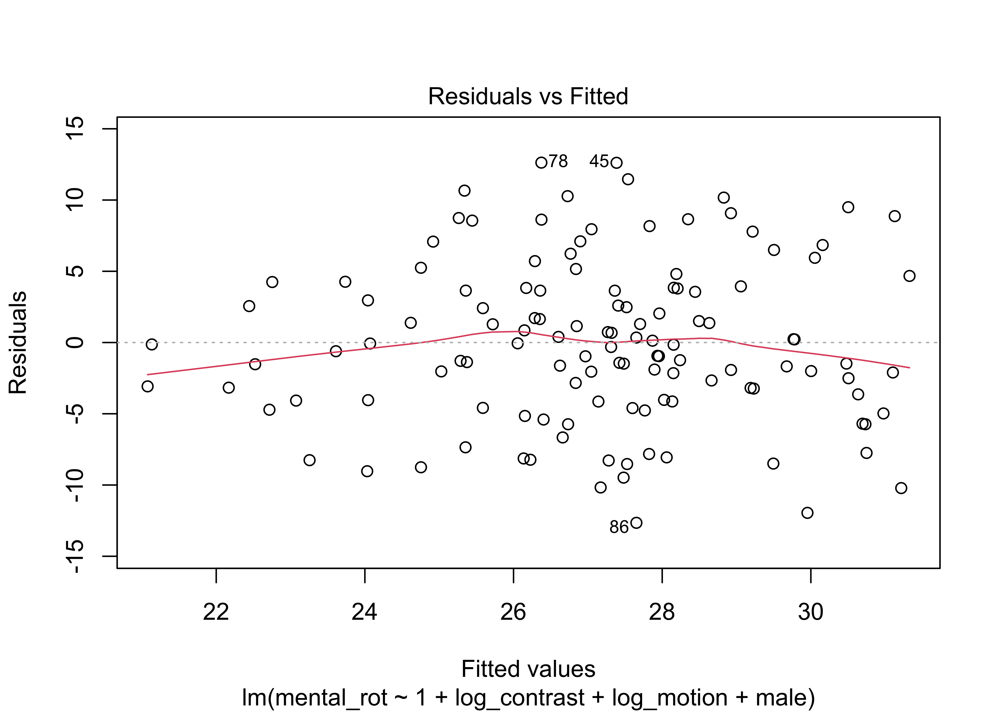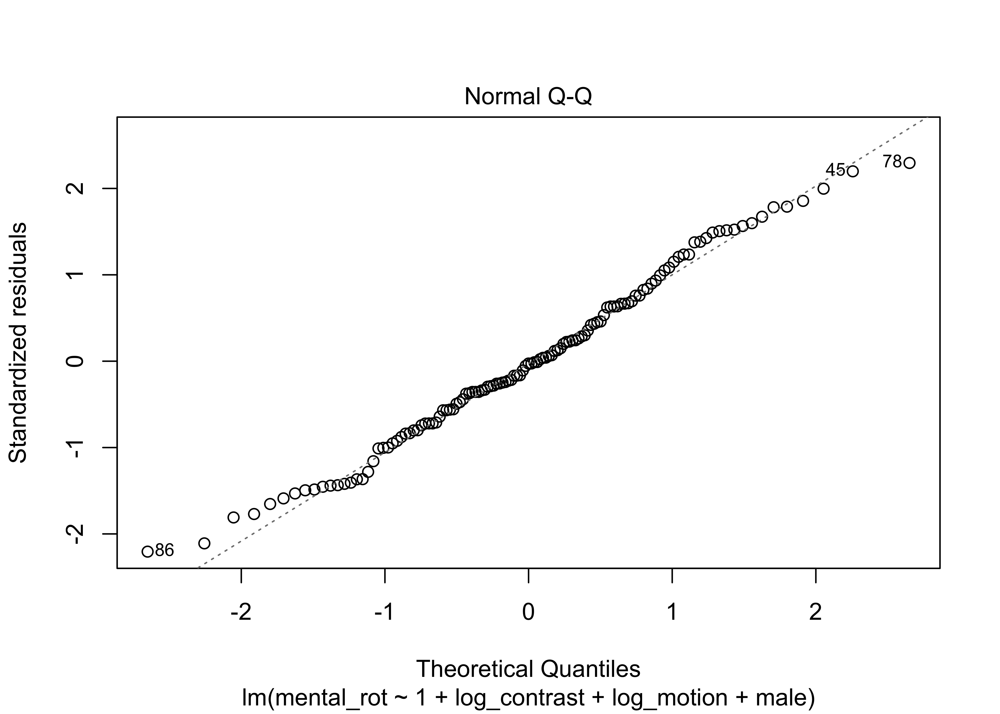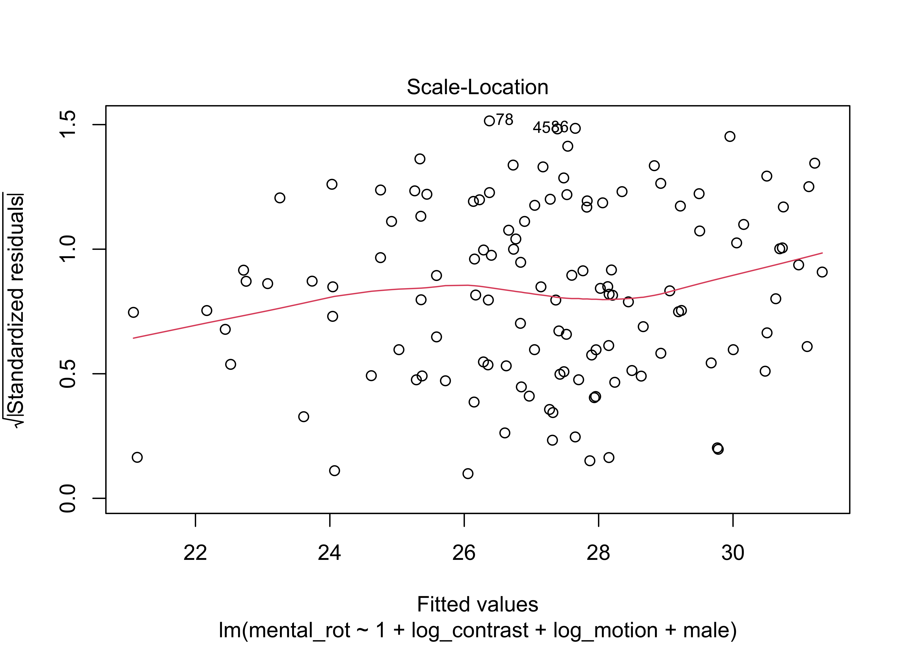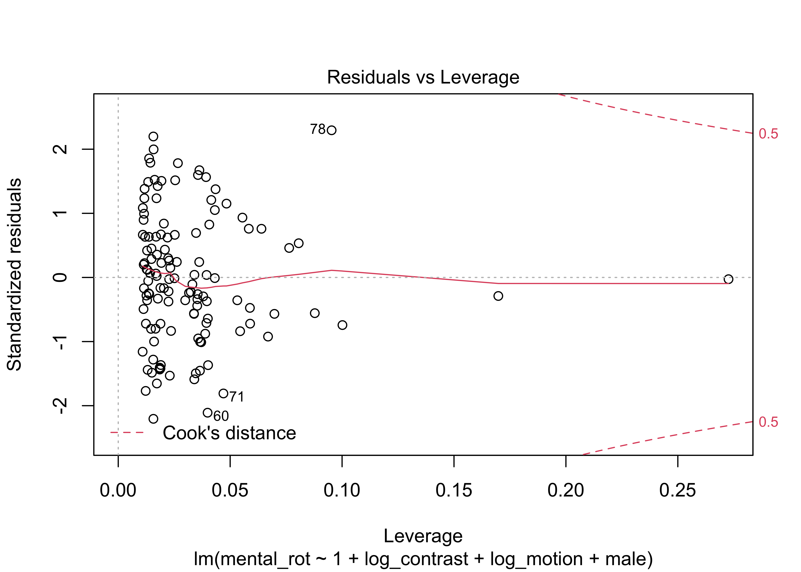
fit2 <- psych::corr.test(df)
print(fit2)## Call:psych::corr.test(x = df)
## Correlation matrix
## mental_rot log_contrast log_motion male male_motion_r
## mental_rot 1.00 -0.28 -0.26 0.23 0.18
## log_contrast -0.28 1.00 0.24 -0.21 0.07
## log_motion -0.26 0.24 1.00 -0.30 0.00
## male 0.23 -0.21 -0.30 1.00 0.00
## male_motion_r 0.18 0.07 0.00 0.00 1.00
## Sample Size
## [1] 125
## Probability values (Entries above the diagonal are adjusted for multiple tests.)
## mental_rot log_contrast log_motion male male_motion_r
## mental_rot 0.00 0.01 0.03 0.06 0.17
## log_contrast 0.00 0.00 0.04 0.08 1.00
## log_motion 0.00 0.01 0.00 0.01 1.00
## male 0.01 0.02 0.00 0.00 1.00
## male_motion_r 0.04 0.42 1.00 1.00 0.00
##
## To see confidence intervals of the correlations, print with the short=FALSE optionLoad helper functions
# First up is the RWA function for a traditional multiple regression analysis
multRegress <- function(mydata) {
numVar <<- NCOL(mydata)
Variables <<- names(mydata)[2:numVar]
mydata <- cor(mydata, use = "pairwise.complete.obs")
RXX <- mydata[2:numVar, 2:numVar]
RXY <- mydata[2:numVar, 1]
RXX.eigen <- eigen(RXX)
D <- diag(RXX.eigen$val)
delta <- sqrt(D)
lambda <- RXX.eigen$vec %*% delta %*% t(RXX.eigen$vec)
lambdasq <- lambda ^ 2
beta <- solve(lambda) %*% RXY
rsquare <<- sum(beta ^ 2)
RawWgt <- lambdasq %*% beta ^ 2
import <- (RawWgt / rsquare) * 100
result <<-
data.frame(Variables,
Raw.RelWeight = RawWgt,
Rescaled.RelWeight = import)
}
# Next up, are functions for the bootstrapping options
multBootstrap <- function(mydata, indices) {
mydata <- mydata[indices, ]
multWeights <- multRegress(mydata)
return(multWeights$Raw.RelWeight)
}
multBootrand <- function(mydata, indices) {
mydata <- mydata[indices, ]
multRWeights <- multRegress(mydata)
multReps <- multRWeights$Raw.RelWeight
randWeight <- multReps[length(multReps)]
randStat <- multReps[-(length(multReps))] - randWeight
return(randStat)
}
multBootcomp <- function(mydata, indices, pred_index = 1) {
mydata <- mydata[indices, ]
multCWeights <- multRegress(mydata)
multCeps <- multCWeights$Raw.RelWeight
comp2Stat <-
multCeps - multCeps[pred_index] # Need to change the number in brackets to reflect which predictor is focal
comp2Stat <-
comp2Stat[-pred_index] # # If 1st predictor, then [1], if the 3rd predictor, then [3]
predictors2 <<-
predictors[-pred_index] # Change number in all three lines (88:90) of code
return(comp2Stat)
}
mybootci <- function(x, FUN2 = multBootcomp) {
boot::boot.ci(multBoot,
conf = 0.95,
type = "bca",
index = x) # using bias corrected and accelerated CIs
}
runBoot <- function(num) {
INDEX <- 1:num
test <- lapply(INDEX, FUN = mybootci)
test2 <- t(sapply(test, '[[', i = 4)) #extracts confidence interval
CIresult <<-
data.frame(Variables,
CI.Lower.Bound = test2[, 4],
CI.Upper.Bound = test2[, 5])
}
myRbootci <- function(x) {
boot::boot.ci(multRBoot,
conf = 0.95,
type = "bca",
index = x)
}
runRBoot <- function(num) {
INDEX <- 1:num
test <- lapply(INDEX, FUN = myRbootci)
test2 <- t(sapply(test, '[[', i = 4))
CIresult <<-
data.frame(predictors,
CI.Lower.Bound = test2[, 4],
CI.Upper.Bound = test2[, 5])
}
myCbootci <- function(x) {
boot::boot.ci(multC2Boot,
conf = 0.95,
type = "bca",
index = x)
}
runCBoot <- function(num) {
INDEX <- 1:num
test <- lapply(INDEX, FUN = myCbootci)
test2 <- t(sapply(test, '[[', i = 4))
CIresult <<-
data.frame(predictors2,
CI.Lower.Bound = test2[, 4],
CI.Upper.Bound = test2[, 5])
}
myGbootci <- function(x) {
boot::boot.ci(groupBoot,
conf = 0.95,
type = "bca",
index = x)
}
runGBoot <- function(num) {
INDEX <- 1:num
test <- lapply(INDEX, FUN = myGbootci)
test2 <- t(sapply(test, '[[', i = 4))
CIresult <<-
data.frame(predictors,
CI.Lower.Bound = test2[, 4],
CI.Upper.Bound = test2[, 5])
}Run the RWA
multRegress(df)
(RW.Results <-
result) # create new objects that saves results of RW analysis.## Variables Raw.RelWeight Rescaled.RelWeight
## 1 log_contrast 0.06039150 35.00539
## 2 log_motion 0.04370211 25.33153
## 3 male 0.03213888 18.62901
## 4 male_motion_r 0.03628811 21.03407# using the () just tells R to print the results and create the object.
RSQ.Results <- rsquareRun bootstrapping to estimate SEs
#Bootstrapped Confidence interval around the individual relative weights
#Please be patient -- This can take a few minutes to run
multBoot <-
boot::boot(df, multBootstrap, n_boots) # n_boots is the # of replications;
# you can change to other values.
multci <- boot::boot.ci(multBoot, conf = 0.95, type = "bca")
runBoot(length(df[, 2:numVar]))
CI.Results <- CIresult
#Bootstrapped Confidence interval tests of Significance
#Please be patient -- This can take a few minutes to run
randVar <- rnorm(nrow(df[, 1]), 0, 1)
randData <- cbind(df, randVar)
multRBoot <- boot::boot(randData, multBootrand, n_boots)
multRci <- boot::boot.ci(multRBoot, conf = 0.95, type = "bca")
runRBoot(length(randData[, 2:(numVar - 1)]))
CI.Significance <- CIresultRelative weights for full model
#R-squared For the Model
RSQ.Results## [1] 0.1725206#The Raw and Rescaled Weights
RW.Results## Variables Raw.RelWeight Rescaled.RelWeight
## 1 log_contrast 0.06039150 35.00539
## 2 log_motion 0.04370211 25.33153
## 3 male 0.03213888 18.62901
## 4 male_motion_r 0.03628811 21.03407#BCa Confidence Intervals around the raw weights
CI.Results## Variables CI.Lower.Bound CI.Upper.Bound
## 1 log_contrast 0.013717914 0.1437826
## 2 log_motion 0.005376345 0.1150290
## 3 male 0.002376390 0.1092834
## 4 male_motion_r 0.001728772 0.1398696#BCa Confidence Interval Tests of significance
#If Zero is not included, Weight is Significant
CI.Significance## predictors CI.Lower.Bound CI.Upper.Bound
## 1 log_contrast 0.001505236 0.1520616
## 2 log_motion -0.012087599 0.1264643
## 3 male -0.023620491 0.1218635
## 4 male_motion_r -0.027466339 0.1455339Run the RWA on the trimmed data
We deleted two female participants with very low motion duration thresholds. Here we examine whether that changes the relative weights.
Import and clean data
df <- readr::read_csv(file.path("csv/mr-contr-motion-sex-trimmed.csv"))## Rows: 123 Columns: 4## ── Column specification ────────────────────────────────────────────────────────
## Delimiter: ","
## chr (1): Sex
## dbl (3): log_contrast, log_motion, mental_rot##
## ℹ Use `spec()` to retrieve the full column specification for this data.
## ℹ Specify the column types or set `show_col_types = FALSE` to quiet this message.# Requires all variables be numeric so we recode Sex with Female = 0, Male = 1.
df <- df %>%
dplyr::mutate(., male = if_else(Sex == "Male", 1, 0)) %>%
dplyr::select(., mental_rot, log_contrast, log_motion, male)
df <- df %>%
dplyr::mutate(., male_motion = male * log_motion) %>%
dplyr::select(., mental_rot, log_contrast, log_motion, male, male_motion)
male_motion_lm <- lm(formula = male_motion ~ 1 + male + log_motion, data = df)
male_motion_resid <- resid(male_motion_lm)
df <- df %>%
dplyr::mutate(., male_motion_r = male_motion_resid) %>%
dplyr::select(., mental_rot, log_contrast, log_motion, male, male_motion_r)Run the RWA
multRegress(df)
(RW.Results <-
result) # create new objects that saves results of RW analysis.## Variables Raw.RelWeight Rescaled.RelWeight
## 1 log_contrast 0.05916210 37.51117
## 2 log_motion 0.02750092 17.43670
## 3 male 0.03135051 19.87749
## 4 male_motion_r 0.03970511 25.17464# using the () just tells R to print the results and create the object.
RSQ.Results <- rsquareRun bootstrapping to estimate SEs
#Bootstrapped Confidence interval around the individual relative weights
#Please be patient -- This can take a few minutes to run
multBoot <-
boot::boot(df, multBootstrap, n_boots) # n_boots is the # of replications;
# you can change to other values.
multci <- boot::boot.ci(multBoot, conf = 0.95, type = "bca")
runBoot(length(df[, 2:numVar]))
CI.Results <- CIresult
#Bootstrapped Confidence interval tests of Significance
#Please be patient -- This can take a few minutes to run
randVar <- rnorm(nrow(df[, 1]), 0, 1)
randData <- cbind(df, randVar)
multRBoot <- boot::boot(randData, multBootrand, n_boots)
multRci <- boot::boot.ci(multRBoot, conf = 0.95, type = "bca")
runRBoot(length(randData[, 2:(numVar - 1)]))
CI.Significance <- CIresultRelative weights for full model (trimmed data)
#R-squared For the Model
RSQ.Results## [1] 0.1577186#The Raw and Rescaled Weights
RW.Results## Variables Raw.RelWeight Rescaled.RelWeight
## 1 log_contrast 0.05916210 37.51117
## 2 log_motion 0.02750092 17.43670
## 3 male 0.03135051 19.87749
## 4 male_motion_r 0.03970511 25.17464#BCa Confidence Intervals around the raw weights
CI.Results## Variables CI.Lower.Bound CI.Upper.Bound
## 1 log_contrast 0.012512133 0.14325350
## 2 log_motion 0.002274291 0.09796519
## 3 male 0.001911248 0.10947270
## 4 male_motion_r 0.001700543 0.15083544#BCa Confidence Interval Tests of significance
#If Zero is not included, Weight is Significant
CI.Significance## predictors CI.Lower.Bound CI.Upper.Bound
## 1 log_contrast 0.011176291 0.1513664
## 2 log_motion -0.004852393 0.1140991
## 3 male -0.004952606 0.1231238
## 4 male_motion_r -0.004730022 0.1606819Do men and women differ in other ways?
Age
xtabs(~ Sex + Age, df_trimmed)## Age
## Sex 18-19 20-21 22-23 23+
## Female 74 21 2 2
## Male 19 9 1 1School_year
xtabs(~ Sex + School_year, df_trimmed)## School_year
## Sex 1st 2nd 3rd 4th
## Female 64 19 12 4
## Male 19 3 6 2Acuity
xtabs(~ Sex + Acuity, df_trimmed)## Acuity
## Sex 20/16 20/20 20/25 20/32
## Female 77 20 1 1
## Male 19 10 1 0Glasses
xtabs(~ Sex + Glasses, df_trimmed)## Glasses
## Sex glasses/contacts none
## Female 34 30
## Male 7 12Stereo acuity
xtabs(~ Sex + Stereo_amin, df_trimmed)## Stereo_amin
## Sex 40 50 60 80 100 140 400 800
## Female 84 5 3 2 2 2 0 1
## Male 21 0 3 1 2 1 2 0Check internal reliability of interests
This measure was taken from a subset of a measure of Gender Diagnosticity (Lippa & Connelly, 1991). Lippa’s measure had participants rate degree of interest in 51 everyday activities (e.g., making a speech, cooking, and discussing politics), and 39 amusements and hobbies (e.g., fishing, jazz or rock concerts, and art galleries). Subjects rated their degree of preference on a 5-point scale: strongly dislike, (1) slightly dislike (2), neutral or indifferent (3), slightly like (4), and strongly like (5). The lists of activities and amusements came from those appearing in Part I of the Strong-Campbell Interest Inventory, Form T325 (Campbell & Hansen, 1981). Our list of items collapses the two subsets of hobby types into one category, and eliminates those which were outdated or unpopular by the time Phase 4 testing began.
Lippa, R., & Connelly, S. (1990). Gender diagnosticity: A new Bayesian approach to gender-related individual differences. Journal of Personality and Social Psychology, 59(5), 1051–1065. https://doi.org/10.1037/0022-3514.59.5.1051
Campbell, D. P., & Hansen, J.-I. C. (1981). Manual for the SVIB-SCII: Strong-Campbell interest inventory, form T325 of the Strong vocational interest blank (Vol. 325). Stanford University Press.
dancing going to art galleries going to church groups writing poetry trying new fashions aerobics travelling talking on phone with friends clothes shopping romance novels singing photography going to formal dress affairs cooking going to shows and plays knitting romance movies going out to dinner with friends going to museums house plants collecting stuffed animals collecting pictures of friends and family
22 items
interest_vars <- sex_diff_df[, 27:86]
f_typed_interests <-
c("Dancing",
"Going to art galleries",
"Going to church groups",
"Writing poetry",
"Trying new fashions",
"Aerobics",
"Travelling",
"Talking on phone with friends",
"Clothes shopping",
"Romance novels",
"Singing",
"Photography",
"Going to formal dress affairs",
"Cooking",
"Going to shows and plays",
"Knitting",
"Romance movies",
"Going out to dinner with friends",
"Going to museums",
"House plants",
"Collecting stuffed animals",
"Collecting pictures of friends and family"
)
f_interest_vars <- interest_vars[, names(interest_vars) %in% f_typed_interests]
psych::alpha(f_interest_vars)##
## Reliability analysis
## Call: psych::alpha(x = f_interest_vars)
##
## raw_alpha std.alpha G6(smc) average_r S/N ase mean sd median_r
## 0.8 0.8 0.85 0.15 3.9 0.025 3.5 0.46 0.15
##
## lower alpha upper 95% confidence boundaries
## 0.75 0.8 0.85
##
## Reliability if an item is dropped:
## raw_alpha std.alpha G6(smc) average_r
## Dancing 0.78 0.78 0.84 0.15
## Going to art galleries 0.78 0.78 0.83 0.15
## Going to church groups 0.80 0.80 0.86 0.16
## Writing poetry 0.79 0.79 0.85 0.15
## Trying new fashions 0.78 0.78 0.84 0.15
## Aerobics 0.79 0.79 0.85 0.15
## Travelling 0.79 0.79 0.85 0.15
## Talking on phone with friends 0.79 0.79 0.85 0.15
## Clothes shopping 0.78 0.78 0.84 0.15
## Romance novels 0.78 0.78 0.84 0.15
## Singing 0.79 0.79 0.85 0.15
## Photography 0.79 0.79 0.84 0.15
## Going to formal dress affairs 0.78 0.78 0.84 0.15
## Cooking 0.80 0.80 0.86 0.16
## Going to shows and plays 0.79 0.79 0.85 0.15
## Knitting 0.80 0.80 0.85 0.16
## Romance movies 0.78 0.78 0.84 0.15
## Going out to dinner with friends 0.79 0.79 0.85 0.15
## Going to museums 0.79 0.79 0.84 0.15
## House plants 0.78 0.78 0.84 0.15
## Collecting stuffed animals 0.79 0.79 0.85 0.15
## Collecting pictures of friends and family 0.79 0.79 0.84 0.15
## S/N alpha se var.r med.r
## Dancing 3.6 0.027 0.017 0.15
## Going to art galleries 3.6 0.027 0.015 0.15
## Going to church groups 4.0 0.025 0.016 0.15
## Writing poetry 3.8 0.026 0.016 0.15
## Trying new fashions 3.6 0.027 0.015 0.14
## Aerobics 3.8 0.026 0.017 0.15
## Travelling 3.7 0.026 0.016 0.15
## Talking on phone with friends 3.8 0.026 0.017 0.15
## Clothes shopping 3.6 0.027 0.015 0.14
## Romance novels 3.6 0.027 0.016 0.14
## Singing 3.7 0.026 0.016 0.15
## Photography 3.7 0.026 0.017 0.14
## Going to formal dress affairs 3.6 0.027 0.015 0.15
## Cooking 4.0 0.025 0.016 0.15
## Going to shows and plays 3.7 0.026 0.017 0.14
## Knitting 4.0 0.025 0.015 0.15
## Romance movies 3.6 0.027 0.016 0.14
## Going out to dinner with friends 3.8 0.026 0.017 0.15
## Going to museums 3.7 0.026 0.015 0.15
## House plants 3.6 0.027 0.017 0.14
## Collecting stuffed animals 3.8 0.026 0.017 0.15
## Collecting pictures of friends and family 3.7 0.026 0.016 0.14
##
## Item statistics
## n raw.r std.r r.cor r.drop mean
## Dancing 131 0.53 0.51 0.48 0.43 3.7
## Going to art galleries 131 0.55 0.53 0.54 0.46 3.3
## Going to church groups 131 0.23 0.23 0.15 0.13 2.3
## Writing poetry 131 0.44 0.41 0.36 0.33 2.2
## Trying new fashions 131 0.53 0.55 0.54 0.46 3.8
## Aerobics 131 0.41 0.40 0.35 0.31 3.2
## Travelling 131 0.39 0.43 0.39 0.32 4.6
## Talking on phone with friends 131 0.31 0.36 0.31 0.25 4.4
## Clothes shopping 131 0.52 0.54 0.53 0.43 4.1
## Romance novels 131 0.54 0.49 0.48 0.44 3.1
## Singing 131 0.45 0.43 0.39 0.35 3.5
## Photography 131 0.40 0.44 0.40 0.33 3.9
## Going to formal dress affairs 131 0.54 0.55 0.53 0.46 3.8
## Cooking 131 0.25 0.26 0.18 0.15 4.0
## Going to shows and plays 131 0.45 0.45 0.40 0.35 3.6
## Knitting 131 0.28 0.26 0.21 0.19 2.2
## Romance movies 131 0.51 0.51 0.50 0.42 3.8
## Going out to dinner with friends 131 0.30 0.37 0.32 0.26 4.8
## Going to museums 131 0.47 0.46 0.46 0.37 3.5
## House plants 131 0.54 0.54 0.51 0.46 3.5
## Collecting stuffed animals 131 0.41 0.39 0.35 0.31 2.4
## Collecting pictures of friends and family 131 0.47 0.48 0.45 0.38 4.1
## sd
## Dancing 1.21
## Going to art galleries 1.13
## Going to church groups 1.10
## Writing poetry 1.25
## Trying new fashions 0.94
## Aerobics 1.10
## Travelling 0.76
## Talking on phone with friends 0.67
## Clothes shopping 1.16
## Romance novels 1.30
## Singing 1.20
## Photography 0.88
## Going to formal dress affairs 1.07
## Cooking 0.96
## Going to shows and plays 1.16
## Knitting 1.00
## Romance movies 1.18
## Going out to dinner with friends 0.46
## Going to museums 1.17
## House plants 1.17
## Collecting stuffed animals 1.09
## Collecting pictures of friends and family 1.07
##
## Non missing response frequency for each item
## 1 2 3 4 5 miss
## Dancing 0.07 0.13 0.13 0.39 0.28 0.01
## Going to art galleries 0.07 0.20 0.24 0.37 0.13 0.01
## Going to church groups 0.27 0.30 0.27 0.12 0.03 0.01
## Writing poetry 0.43 0.18 0.21 0.13 0.05 0.01
## Trying new fashions 0.02 0.06 0.28 0.39 0.25 0.01
## Aerobics 0.09 0.14 0.37 0.28 0.11 0.01
## Travelling 0.01 0.02 0.05 0.18 0.74 0.01
## Talking on phone with friends 0.00 0.01 0.08 0.40 0.51 0.01
## Clothes shopping 0.05 0.08 0.08 0.27 0.53 0.01
## Romance novels 0.15 0.20 0.22 0.28 0.15 0.01
## Singing 0.09 0.10 0.24 0.35 0.21 0.01
## Photography 0.00 0.07 0.24 0.43 0.26 0.01
## Going to formal dress affairs 0.05 0.08 0.14 0.45 0.28 0.01
## Cooking 0.02 0.06 0.12 0.45 0.34 0.01
## Going to shows and plays 0.08 0.08 0.26 0.35 0.24 0.01
## Knitting 0.32 0.30 0.31 0.06 0.02 0.01
## Romance movies 0.05 0.12 0.16 0.31 0.36 0.01
## Going out to dinner with friends 0.00 0.00 0.02 0.17 0.81 0.01
## Going to museums 0.06 0.15 0.21 0.36 0.23 0.01
## House plants 0.05 0.14 0.29 0.27 0.25 0.01
## Collecting stuffed animals 0.24 0.31 0.26 0.18 0.02 0.01
## Collecting pictures of friends and family 0.05 0.02 0.21 0.26 0.47 0.01Activities showing strong patterns of endorsement or high ratings by male participants:
golf home electronics surfing computers video games watching violent movies going to car shows fishing poker playing basketball TV sports football weight lifting working on cars drag racing
15 items
m_typed_interests <-
c(
"Golf",
"Home electronics",
"Surfing",
"Computers",
"Video games",
"Watching violent movies",
"Going to car shows",
"Fishing",
"Poker",
"Playing basketball",
"TV sports",
"Football",
"Weight lifting",
"Working on cars",
"Drag racing"
)
m_interest_vars <- interest_vars[, ( names(interest_vars) %in% m_typed_interests )]
psych::alpha(m_interest_vars)##
## Reliability analysis
## Call: psych::alpha(x = m_interest_vars)
##
## raw_alpha std.alpha G6(smc) average_r S/N ase mean sd median_r
## 0.79 0.8 0.84 0.21 3.9 0.026 3 0.6 0.2
##
## lower alpha upper 95% confidence boundaries
## 0.74 0.79 0.85
##
## Reliability if an item is dropped:
## raw_alpha std.alpha G6(smc) average_r S/N alpha se
## Golf 0.79 0.79 0.84 0.22 3.9 0.027
## Home electronics 0.79 0.79 0.84 0.21 3.8 0.027
## Surfing 0.79 0.79 0.84 0.22 3.8 0.027
## Computers 0.79 0.79 0.83 0.21 3.8 0.027
## Video games 0.78 0.78 0.83 0.21 3.6 0.028
## Watching violent movies 0.79 0.80 0.84 0.22 3.9 0.026
## Going to car shows 0.77 0.77 0.82 0.19 3.3 0.030
## Fishing 0.79 0.79 0.84 0.21 3.7 0.027
## Poker 0.79 0.79 0.84 0.21 3.7 0.027
## Playing basketball 0.77 0.78 0.83 0.20 3.5 0.029
## TV sports 0.78 0.79 0.83 0.21 3.7 0.028
## Football 0.78 0.78 0.83 0.21 3.6 0.028
## Weight lifting 0.79 0.79 0.84 0.21 3.8 0.027
## Working on cars 0.77 0.77 0.81 0.19 3.3 0.030
## Drag racing 0.78 0.78 0.83 0.20 3.5 0.028
## var.r med.r
## Golf 0.024 0.22
## Home electronics 0.022 0.22
## Surfing 0.023 0.21
## Computers 0.021 0.21
## Video games 0.020 0.20
## Watching violent movies 0.022 0.21
## Going to car shows 0.021 0.18
## Fishing 0.024 0.20
## Poker 0.024 0.20
## Playing basketball 0.024 0.20
## TV sports 0.021 0.20
## Football 0.021 0.20
## Weight lifting 0.023 0.20
## Working on cars 0.021 0.18
## Drag racing 0.023 0.20
##
## Item statistics
## n raw.r std.r r.cor r.drop mean sd
## Golf 131 0.40 0.41 0.33 0.29 2.6 1.14
## Home electronics 131 0.42 0.44 0.39 0.32 4.1 0.98
## Surfing 131 0.41 0.41 0.34 0.30 3.0 1.15
## Computers 131 0.43 0.45 0.41 0.33 3.8 1.02
## Video games 131 0.53 0.53 0.51 0.41 3.4 1.32
## Watching violent movies 131 0.39 0.39 0.32 0.27 3.1 1.21
## Going to car shows 131 0.69 0.70 0.69 0.62 2.3 1.11
## Fishing 131 0.47 0.47 0.40 0.36 2.9 1.14
## Poker 131 0.49 0.49 0.43 0.38 2.9 1.18
## Playing basketball 131 0.62 0.60 0.56 0.51 3.1 1.34
## TV sports 131 0.52 0.51 0.49 0.41 3.4 1.25
## Football 131 0.55 0.53 0.51 0.44 3.6 1.23
## Weight lifting 131 0.44 0.43 0.36 0.32 3.0 1.26
## Working on cars 131 0.71 0.72 0.73 0.65 1.9 1.04
## Drag racing 131 0.57 0.57 0.54 0.47 2.3 1.15
##
## Non missing response frequency for each item
## 1 2 3 4 5 miss
## Golf 0.18 0.31 0.28 0.16 0.06 0.01
## Home electronics 0.02 0.05 0.16 0.37 0.40 0.01
## Surfing 0.15 0.13 0.44 0.18 0.11 0.01
## Computers 0.03 0.08 0.21 0.41 0.27 0.01
## Video games 0.11 0.16 0.23 0.24 0.27 0.01
## Watching violent movies 0.11 0.21 0.29 0.25 0.15 0.01
## Going to car shows 0.28 0.37 0.21 0.10 0.05 0.01
## Fishing 0.16 0.20 0.32 0.27 0.05 0.01
## Poker 0.17 0.20 0.32 0.24 0.08 0.01
## Playing basketball 0.17 0.18 0.26 0.21 0.18 0.01
## TV sports 0.07 0.21 0.20 0.28 0.24 0.01
## Football 0.08 0.11 0.21 0.31 0.29 0.01
## Weight lifting 0.13 0.24 0.25 0.24 0.15 0.01
## Working on cars 0.44 0.35 0.15 0.02 0.05 0.01
## Drag racing 0.30 0.27 0.29 0.08 0.05 0.01